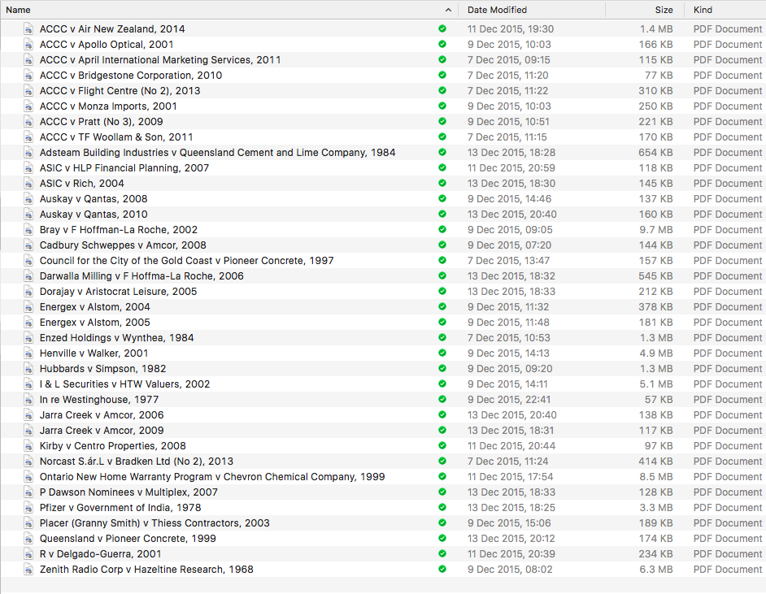
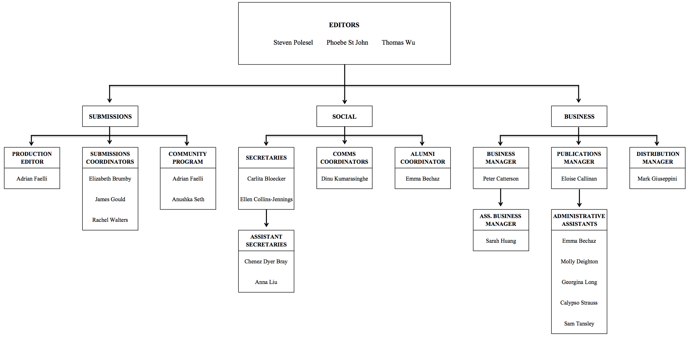

GM Edit

| Name | University | Position | Research Area | Last Refereed | Blacklisted? | Last Updated |
|---|---|---|---|---|---|---|
| Farrah Ahmed | Melbourne | Associate Professor | Public law; Legal Theory; Family Law; Social Rights Adjudication; Religious Tribunals | N | N | 9/9/16 |
| Paul Ali | Melbourne | Associate Professor | Banking and Finance Law; Securities | 1/15/16 | N | 9/9/16 |
| Helen Anderson | Melbourne | Professor | Business Law; Company Law; Unfair Treatment of Vulnerable Parties | 8/15/16 | N | 9/9/16 |
| Anna Arstein-Kerslake | Melbourne | Lecturer | Disability Law; Human Rights | N | N | 9/9/16 |
| Graeme Austin | Melbourne | Professor | International Intellectual Property | 6/2/14 | N | 9/9/16 |
| Ian Bailey | Melbourne | Professor | Construction Disputes; Professional Negligence of Building Professionals; Technical and Engineering Claims | N | N | 9/9/16 |
| Elise Bant | Melbourne | Professor | Unjust Enrichment; Restitution Law; Property Law; Civil Remedies; Equity and Trusts | 8/18/16 | N | 9/9/16 |
| Katy Barnett | Melbourne | Associate Professor | Civil Remedies; Contract; Property; Equity and Trusts; Torts | N | N | 9/9/16 |
| Jenny Beard | Melbourne | Senior Lecturer | Law and Society; Law and Development; Theories of the State; Law and Political Power | N | N | 9/9/16 |
| Caron Beaton-Wells | Melbourne | Professor | Competition Law; Consumer Law; | N | N | 9/9/16 |
| Matthew Bell | Melbourne | Senior Lecturer | Construction Law | 2/9/15 | N | 9/9/16 |
| Alysia Blackham | Melbourne | Senior Lecturer | Ageing and Labour Law; Equality Law; Discrimination Law; Courts and Social Media | N | N | 9/9/16 |
| Jason Bosland | Melbourne | Senior Lecturer | Intellectual Property; Media and Communications Law | 5/17/15 | N | 9/9/16 |
| Michael Bryan | Melbourne | Emeritus Professor | Equity and Trusts; Restitution Law; Proprietary Remedies | 10/21/15 | N | 9/9/16 |
| Mark Burton | Melbourne | Associate Professor | Taxation Law; Theory and Practice of Tax Administration; Tax Legislative Process | 9/3/08 | N | 9/9/16 |
| Gary Cazalet | Melbourne | Senior Lecturer | Dispute Resolution; Court Procedures and Processes; Legal Ethics; Public Interest Litigation; Law and Literature | 1/22/14 | N | 9/9/16 |
| Anna Chapman | Melbourne | Associate Professor | Employment and Labour Relations Law; National Employment Standards; Unfair Dismissal; Anti-Discrimination Law | 5/1/16 | N | 9/9/16 |
| Andrew Christie | Melbourne | Professor | Intellectual Property | N | N | 9/9/16 |
| Monique Cormier | Melbourne | Sessional Lecturer | Jurisdiction; Defences and Immunities in International Criminal Law | N | N | 9/9/16 |
| Michael Crawford | Melbourne | Sessional Lecturer | Equity and Trusts; Property | N | N | 9/9/16 |
| Michael Crommelin | Melbourne | Professor | Competition Law; Consumer Law; | N | N | 9/9/16 |
| Arlen Duke | Melbourne | Senior Lecturer | Competition Law; Consumer Law; Contract | 8/2/16 | N | 9/9/16 |
| Alison Duxbury | Melbourne | Professor | International Law; Human Rights Law; Military Justice; Law of War | 4/18/13 | N | 9/9/16 |
| Carolyn Evans | Melbourne | Professor | Constitutional Law; Law and Religion | 8/5/13 | N | 9/9/16 |
| Simon Evans | Melbourne | Professor | Comparative Public Law; Constitutional Law; Administrative Law; Human Rights; Constitutional Theory; Constitutional Property; Accountability of Executive Government | 3/15/16 | N | 9/9/16 |
| Belinda Fehlberg | Melbourne | Professor | Family Law | N | N | 9/9/16 |
| Colin Fenwick | Melbourne | Associate Professor | Labour Law | N | N | 9/9/16 |
| Michelle Foster | Melbourne | Professor | International Refugee Law | 12/5/13 | N | 9/9/16 |
| Jeremy Gans | Melbourne | Professor | Criminal Investigation; Fact-Finding in Sexual Assault Trials; Evidence; Criminal Process Rights | 1/2/16 | N | 9/9/16 |
| Richard Garnett | Melbourne | Professor | Conflict of Laws; International Commercial Dispute Resolution; Cross-border Online Conduct | N | N | 9/9/16 |
| Beth Gaze | Melbourne | Professor | Anti-discrimination and Equality Law; Feminist Legal Thought; Administrative Law; Employment and Labour Relations Law | 7/26/13 | N | 9/9/16 |
| Ann Genovese | Melbourne | Associate Professor | Law and History; Nature of Legal Archives | 6/2/08 | N | 9/9/16 |
| Lee Godden | Melbourne | Professor | Environmental Resources Law; Natural Resources Law; Water Law; Indigenous Peoples' Land and Resources Rights; Property Law | 4/14/14 | N | 9/9/16 |
| Andrew Godwin | Melbourne | Senior Lecturer | Banking and Finance Law; Insolvency Law; Transactional Law; Financial Regulation; Regulation of the Legal Profession | 5/2/08 | N | 9/9/16 |
| Lindy Golding | Melbourne | Senior Fellow | Intellectual Property; Confidentiality and Privacy | N | N | 9/9/16 |
| Kirsty Gover | Melbourne | Associate Professor | Law, Policy and Political Theory of Indigenous Rights, Institutions and Jurisdiction; Indigenous Concepts of Law and Politics in Settler State Political Theory and International Law; | 7/6/16 | N | 9/9/16 |
| Michael Gronow | Melbourne | Sessional Teacher | Insolvency Law | N | 9/9/16 | |
| Erica Grundell | Melbourne; Victorian Department of Health and Human Services | Senior Fellow | Legislative Policy, Review and Reform Projects in Mental Health; Health Law, Ethics and Policy | N | 9/9/16 | |
| Linda Haller | Melbourne | Senior Lecturer | Legal Ethics; Professional Discipline and Regulation of Lawyers; Advocates' Immunity | N | 9/9/16 | |
| Matthew Harding | Melbourne | Professor | Moral and Political Philosophy; Theory and Doctrines of Equity; Property Law; Judicial Practice and Precedent; Law of Charity | N | 9/9/16 | |
| Tess Hardy | Melbourne | Lecturer | Employment Law; Contract; Regulatory Compliance and Enforcement | N | 9/9/16 | |
| Paul Hayes | Melbourne; Victorian Bar | Senior Fellow | Commercial and Equity Litigation and Arbitration; Sports Law; Sports Dispute Resolution; Defamation; Insurance | N | 9/9/16 | |
| Jarrod Hepburn | Melbourne | Research Fellow | International Economic Law; International Human Rights Law; Public Law | N | 9/9/16 | |
| Graeme Hill | Melbourne; Victorian Bar | Senior Fellow; Barrister | Constitutional Law; Administrative Law; Constitutional Litigation; Executive Power | N | 9/9/16 | |
| Ray Hind | Melbourne | Senior Fellow | Intellectual Property; Designs Law | N | 9/9/16 | |
| Jacqueline Horan | Melbourne | Senior Lecturer | Juries and Expert Evidence; Advocacy | N | 9/9/16 | |
| John Howe | Melbourne | Professor | Regulatory Theory; Corporate Accountability; Labour Law | N | 9/9/16 | |
| Annette Hughes | Melbourne; Corrs Chambers Westgarth | Senior Fellow | Product Liability Litigation and Regulation | N | 9/9/16 | |
| Brad Jessup | Melbourne | Lecturer | Environmental Law; Legal Geography; the Law of Place; the Human and Environmental Experience of Harm | |||
| Wayne Jocic | Melbourne | Senior Fellow | Construction Law; Contract; Private Law | |||
| Sunita Jogarajan | Melbourne | Associate Professor | Taxation Law; Tax Policy; the Role of Multinational Institutions; International Tax | |||
| Doug Jones AO RFD | Melbourne | Professorial Fellow | Construction Law; Dispute Resolution; International Arbitration | |||
| Cally Jordan | Melbourne | Associate Professor | Corporate Governance; Capital Markets; Corporate Law | |||
| Tanya Josev | Melbourne | Lecturer | Australian Legal and Political Theory; Private Law; Judicial Activism | |||
| Nasos Kaskani | Melbourne; Victorian Bar | Senior Fellow; Barrister | Taxation Law; Revenue Law | |||
| Andrew Kenyon | Melbourne | Professor | Comparative Media Law; Defamation; Privacy; Free Speech; Copyright; Media Policy | |||
| Joseph Kikonyogo | Melbourne | Sessional Lecturer | Public International Law; WTO Law; UN; International Trade and Investment Law | |||
| Susan Kneebone | Monash | Professor | Refugee Law; Human Trafficking; Governance of Forced Migration; Labour Migration | |||
| Michael Kobetsky | Melbourne | Associate Professor | Taxation Law; International Taxation; Tax Treaties | |||
| Jürgen Kurtz | Melbourne | Professor | International Economic Law; WTO; Investor-State Tribunals; Impact of Treaty-Based Disciplines on Regulatory Autonomy and Development Strategies | |||
| Rosemary Langford | Melbourne | Senior Lecturer | Company Law; Equity; Comparative Law; Corporate Governance and Directors' Duties | |||
| Wendy Larcombe | Melbourne | Associate Professor | Law, Gender and Sexuality; Legal Education | |||
| Rodd Levy | Melbourne; Herbert Smith Freehills | Senior Fellow; Practitioner | Company Takeovers; Corporate and Commercial Law | |||
| Inbar Levy | Melbourne | Lecturer | Empirical Behavioural Psychology and Legal Reasoning and Practice | |||
| Jonathan Liberman | Melbourne; McCabe Centre for Law and Cancer | Senior Fellow; Practitioner | Law and Cancer Control; Public International Law; Tobacco | |||
| Rain Liivoja | Melbourne | Senior Lecturer | Law of Armed Conflict; International Criminal Law; Law of State Jurisdiction; International Humanitarian Law | |||
| Alan Limbury | Melbourne; Strategic Resolution | Senior Fellow; Practitioner | Arbitration and Mediation in Commerce; Alternative Dispute Resolution | |||
| Geoffrey Lindell | Melbourne | Professor | Constitutional Law; Public Law | |||
| Tim Lindsey | Melbourne | Professor | Indonesian Law; Islamic Law; Shari'a; Comparative Law and Reform in Developing Countries | |||
| Damien Lockie | Melbourne; Victorian Bar | Senior Fellow; Barrister | Clean Energy and Emissions Trading Laws; Climate Change Law; Environmental Law; International Environmental Law | |||
| Austin Lovegrove | Melbourne | Principal Fellow | Criminology; Sentencing; Public Opinion and the Public's Sense of Justice; Judicial Decision-Making | |||
| Harold Luntz | Melbourne | Emeritus Professor | Tort Law; Medical Negligence; Compensation; Damages for Personal Injury | |||
| Robert McDonald | Melbourne | Senior Fellow | Sports Law | |||
| Bill Madden | Melbourne; Slater & Gordon | Senior Fellow | Medical Law; Torts; Intentional Torts; Application of Technology in the Practices of Medicine and Law; Medical Litigation | |||
| Ian Malkin | Melbourne | Professor | Torts; Legal Education; Law and Policy Concerning HIV; Compensation Law Reform; Prisoners' Rights; Provision and Supply of Alcohol | |||
| Judith Marychurch | Melbourne | Senior Lecturer | Legal Education; Corporate Law; Evidence Law; Legal Issues around Forensic Accounting | |||
| Robert Mathews OAM | Melbourne; Australian Defence Science and Technology Organisation | Honorary Associate Professor; Principal Fellow | Disarmament; Arms Control Law; Emerging Military Technologies | |||
| Sally McCausland | Melbourne; McCausland Media Law | Senior Fellow | Media Law; Entertainment Law; Broadcast and Digital Rights; Talent Release; Content Compliance; Production Agreements; Licensing and Merchandising; Brand Protection | |||
| Tim McCormack | Melbourne; Utas | Professor; Adjunct Professor | International Criminal Law; International Humanitarian Law | |||
| James McComish | Melbourne | Fellow | Equity and Trusts; Cross-Border Disputes; Commercial Law; Conflict of Laws; English and Australian Legal History | |||
| David McLauchlan | Melbourne; Victoria University of Wellington, NZ | Professorial Fellow | Contract; Commercial Law; Contract Interpretation; Remedies for Breach of Contract | |||
| Mark McMillan | Melbourne | Associate Professor | Human Rights; Expression and Fulfilment of Human Rights for Indigenous Australians | |||
| Bernadette McSherry | Monash | Professor | Criminal Law and Policy; Mental Health Law and Policy | |||
| Shaun McVeigh | Melbourne | Associate Professor | Jurisprudence; Health Care; Legal Ethics | |||
| Bryan Mercurio | Melbourne; Chinese University of Hong Kong | Senior Fellow; Professor | International Economic Law; WTO Law; Free Trade Agreements; International Trade and Intellectual Property Law | |||
| Alexandra Merrett | Melbourne | Senior Fellow; Practitioner | Competition and Consumer Law; ACCC | |||
| Andrew Mitchell | Melbourne | Professor | WTO Law; International Economic Law; International Dispute Settlement | |||
| Andrew Moffat | Melbourne | Senior Fellow; Practitioner | Commercial Dispute Resolution; Mediation | |||
| Carl Möller | Melbourne; Victorian Bar | Senior Fellow; Barrister | Commercial Law; Corporations Law; Insolvency Law | |||
| Jennifer Morgan | Melbourne | Professor | Criminal Law; Discrimination Law; Feminist Legal Theory; Domestic Violence; Homicide; Law Reform; Sexual Harrassment; Sexual Assault | |||
| The Hon Justice Debbie Mortimer | Melbourne; Federal Court of Australia | Senior Fellow | Migration Law; Environmental Law; Anti-Discrimination Law; Extradition Law' Public Law | |||
| Mark Moshinsky QC | Melbourne; Victorian Bar | Senior Fellow; Barrister | Constitutional and Administrative Law; Taxation; Superannuation; Competition Law; Private International Law; Human Rights; Conflict of Laws | |||
| Terry Murhpy QC | Melbourne; Victorian Bar | Senior Fellow; Barrister | Taxation Law; Revenue Law; Superannuation; Commercial Law | |||
| Tim Neilson | Melbourne; Greenwoods & Herbert Smith Freehills | Senior Fellow; Practitioner | Transactions; Income Tax | |||
| Rebecca Nelson | Melbourne | Senior Lecturer | Water Law; Environmental Law; Natural Resources Law and Policy | |||
| Wendy Ng | Melbourne | Lecturer | Competition Law, focusing on China; Law and Development; Political Economy Issues | |||
| The Hon Alastair Nicholson AO QC RFD | Melbourne | Professorial Fellow | Children's Rights; Child Protection; Child Justice Systems | |||
| Pip Nicholson | Melbourne | Professor | Asian Law (Vietnam); Comparative Legal Studies; Dispute Resolution; Law and Reform in Asia; Law and Society in Asia; Courtd and Legal Reform in Socialist States; Drug Trials in Asia; Cross-Cultural Legal Research and Development | |||
| Paula O'Brien | Melbourne | Senior Lecturer | Health Law; Public Interest Law; International Right to Health; Phenomenon of Privatisation; Shortage of Health Workers; Alcohol Regulation; Administrative Law; Regulation of Health Professionals | |||
| Ann O'Connell | Melbourne | Professor | Taxation Law; Taxation of Charities; Securities Law; Agency; Corporate Law | |||
| Frank O'Loughlin | Melbourne; Victorian Bar | Senior Fellow; Barrister | Commonwealth Taxation Law; Taxation Disputes; AAT; ATO | |||
| Hayden Opie | Melbourne | Senior Lecturer | Sports Law; Injury Liability; Anti-Doping; Sports Integrity; Labour Market Regulation | |||
| Chantal Morton | Melbourne | Senior Lecturer | Legal Writing; Professionalism and Ethics; Law, Gender and Equality; Law and Poverty | |||
| Anne Orford | Melbourne | Professor | International Law; Historical and Theoretical Foundations of International Law; Development of International Legal Doctrines and Practice; Role of International Law in Contemporary Politics | |||
| Bruce Oswald CSC | Melbourne | Associate Professor | International Humanitarian Law; Peace Operations; State Building; Accountability and Responsibility; Application of Human Rights Law to Military Operations; Protection of Civilians; Detention During Military Operations; Militias Undertaking Law and Order Functions | |||
| Dianne Otto | Melbourne | Professor | Human Rights Law; Exclusionary Effects of Legal Representations of Marginalised Groups in International Human Rights Law; Gender and Sexuality Issues in Human Rights and Development; Economic, Social and Cultural Rights; NGOs; Domestic Implementation of International Legal Obligations; Public International Law | |||
| The Hon Justice Tony Pagone | Melbourne; Federal Court of Australia | Professorial Fellow | Taxation Law; Commercial Law; Constitution and Public Law; Human Rights Law; VCAT; ATO | |||
| Sundhya Pahuja | Melbourne | Professor | History, Theory and Practice of International Law in Both Political and Economic Dimensions; International Law and the Relationship between North and South; Practice and Praxis of Development and International Law; Public International Law; International Law and Development; Globalisation and Law | |||
| Alice Palmer | Melbourne | Senior Fellow | Environmental Law and Development; Environmental Law Reform and Practice; Public International Law; International Environmental Law | |||
| Andrew Palmer | Melbourne | Associate Professor | Evidence and Proof | |||
| Nicholas Pane QC | Melbourne; Victorian Bar | Senior Fellow; Barrister | Engineering and Construction Disputes | |||
| Julian Panetta | Melbourne | Assistant Lecturer | Corporate Law; Taxation Law; ATO | |||
| Christine Parker | Melbourne | Professor | Regulatory Enforcement in Business; Internal Corporate Social Responsibility; Corporate Compliance with Legal, Social and Environmental Responsibilities; Politics, Ethics and Regulation of Food; Conceptualising and Communicating how Law and Regulation Can Help Individuals and Businesses Live More Sustainably Will in Our Ecological Systems | |||
| James Parker | Melbourne | Senior Lecturer | Relations between Law and Sound; International Criminal Law; Law of War; Acoustic Jurisprudence; Weaponisation of Sound | |||
| Will Partlett | Melbourne | Senior Fellow | Role of Institutions in Comparative Public Law; Insitutional Dimensions of Constitution-Making; Institutional Legacies of the Socialist System of Law | |||
| James Paterson | Melbourne | Sessional Lecturer | Sports Law; Sports Governance | |||
| Jeannie Paterson | Melbourne | Associate Professor | Contract; Consumer Credit Law; Consumer Protection Law | |||
| Neil Pathak | Melbourne | Sessional Teacher; Practitioner | Mergers and Acquisitions | |||
| Glenn Patmore | Melbourne | Senior Lecturer | Constitutional Law; Law of Democracy; Australian Republicanism; Labour Law | |||
| Helen Pausacker | Melbourne | Dr | Religion, Society and Law in Indonesia; Asian Law | |||
| Jacqueline Peel | Melbourne | Professor | International, Transnational and National Dimensions, as Well as Interdisciplinary Aspects of Environmental and Climate Change Law | |||
| Hassan Qaqaya | Melbourne | Professor | Global Competition and Consumer Law; Financial Regulation; International Trade; Anti-Dumping | |||
| Ian Ramsay | Melbourne | Professor | Corporate Law; Securities Regulation; Corporate Governance | |||
| Helen Rhoades | Melbourne | Professor | Torts; Family Law; Dispute Resolution; Children's Law; Policy Issues Affecting the Delivery of Services to Vulnerable Parties | |||
| Melinda Richards SC | Melbourne; Victorian Bar | Royal Commissions and Public Inquiries | ||||
| Megan Richardson | Melbourne | Professor | Intellectual Property; Privacy and Personality Rights; Law Reform; Legal Theory' Meaning of 'Privacy' | |||
| Sam Ricketson | Melbourne | Professor | Intellectual Property (Copyright and Designs; Patents; Trade Marks; Unfair Competition; Breach of Confidence); WIPO; VLRC; Conflicts of Law; Trade Practices; Corporate Law | |||
| Cameron Rider | Melbourne; PwC | Senior Fellow | International Taxation; Corporate Taxation; Tax Controversy | |||
| Sophie Rigney | Melbourne | Sessional Lecturer | International Criminal Procedure | |||
| Andrew Roberts | Melbourne | Senior Lecturer | Criminal Procedure; Evidence; Eyewitness Identification Evidence; Expert Evidence; Privacy; Constitutional and Political Theory | |||
| Andrew Robertson | Melbourne | Professor | Law and Theory of Obligations; Equitable Estoppel; Contract (Limits of Voluntariness in Contract; Contractual Gaps); Negligence (Relationship between Interpersonal Justice and Considerations of Community Welfare) | |||
| Peter Rozen | Melbourne; Victorian Bar | Senior Fellow; Barrister | Workplace Health and Safety | |||
| Kristen Rundle | Melbourne | Senior Lecturer | Interface of Legal Theory and Public Law; Law as Limitation on Power; Lon Fuller; Law and the Holocaust; Legal and Institutional Attributes of British Child Migration to Australia | |||
| Peter Rush | Melbourne | Associate Professor | Criminal Law (Australian; Comparative; International); International Criminal Justice; Trauma and Transitional Justice; Jurisprudence and the Humanities; Legal History; Legal Method; Critical Legal Studies; | |||
| Lisa Sarmas | Melbourne | Senior Lecturer | Equity; Feminist Legal Theory; Law and Sexuality; Legal Theory; Multiculturalism and the Law; Queer and Post-Modern Legal Theory; Sexual Identities and the Law; Trusts | |||
| Cheryl Saunders | Melbourne | Laureate Professor Emeritus | Australian and Comparative Public Law; Comparative Constitutional Law and Method; Intergovernmental Relations; Constitutional Design and Change | |||
| Julian Sempill | Melbourne | Senior Lecturer | Moral, Political and Legal Philosophy; Relationship between Law, Social Power and Human Rights; Rule of Law | |||
| John Sharkey AM | Melbourne; Sharkey Consulting | Professorial Fellow | Building and Construction Law | |||
| Guy Fiti Sinclair | Melbourne; Victoria University of Wellington, NZ | Senior Fellow | Law, Political Theory and Practice of International Organisations; Public International Law; History and Theory of International Law; Law and Global Governance | |||
| Loane Skene | Melbourne | Professor | Ownership' of Human Bodily Material; Ethics; Medical Law | |||
| Dale Smith | Melbourne | Senior Lecturer | Analytic Legal Philosophy; Dworkin | |||
| Greg Smith | Melbourne; Australian Grants Commission | Senior Fellow | Treasury; Budget; Taxation; Economic and Social Policy | |||
| Rhonda Smith | Melbourne | Senior Fellow | Industrial Economics; ACCC; Copyright Reform; Trade Practices | |||
| Stacey Steele | Melbourne | Associate Professor | Japanese Law; Asian Law | |||
| Scott Stephenson | Melbourne | Lecturer | Australian and Comparative Constitutional Law and Theory; Migration of Constitutional Ideas; Models of Rights Protection; Quasi-Constitutional Law; Federalism; International Law's Effects on Constitutional Doctrines | |||
| Andrew Stephenson | Melbourne | Senior Fellow; Practitioner | Construction Law; International Arbitration | |||
| Miranda Stewart | Melbourne | Professor | Taxation Law and Policy; Taxation of Business and Investment Entities; Taxation and Development; Not-for-Profits; Taxation Reform in the Context of Globalisation | |||
| Simon Steward QC | Melbourne; Victorian Bar | Senior Fellow; Barrister | Tax Litigation | |||
| Adrienne Stone | Melbourne | Professor | Constitutional Law; Constitutional Theory; Freedom of Expression; Bills of Rights; Judicial Method in Constitutional Cases | |||
| Benny Tabalujan | Melbourne | Senior Fellow; Associate Professor | Commercial Law in Asia | |||
| Michelle Taylor-Sands | Melbourne | Senior Lecturer | Health Law and Bioethics; Civil Procedure; Dispute Resolution; AGS; Selective Reproduction | |||
| Maureen Tehan | Melbourne | Associate Professor | Energy and Environmental Law | |||
| Joo-Cheong Tham | Melbourne | Associate Professor | Labour Law; Public Law; Regulation of Precarious Wrok; Political Finance Law | |||
| John Tobin | Melbourne | Professor | International Law; Human Rights; Children's Rights; Public Interest Lawyering | |||
| Jason Varuhas | Melbourne | Associate Professor | Administrative Law; Torts; Remedies | |||
| Tania Voon | Melbourne | Professor | WTO Law; AGS; Public International Law; International Economic Law | |||
| Martin Vranken | Melbourne | Associate Professor | European Civil Law; Comparative Law | |||
| Kristen Walker | Melbourne; Victorian Bar | Principal Fellow | Constitutional Law; Law and Sexuality; International Law; Human Rights; Refugee Law; Public Law | |||
| Julia Watson | Melbourne | Sessional Academic | VGSO; Constitutional Law; Administrative Law | |||
| Julian Webb | Melbourne | Professor | Legal Ethics; Legal Theory; Ethics and Professional Regulation of Lawyers; Developments in the Market for Legal Services; Political Economy of Legal Education; Regulatory Theory and Practice. | |||
| David Webber | Melbourne; Davies Collison Cave | Senior Fellow; Practitioner | Patent Practice; Patents in Internet, Communications | |||
| Lael Weiss | Melbourne | Lecturer | Intersection of Constitutional Legal Theory, Democratic Political Theory and Comparative Constitutional Law; Property Theory; Political Philosophy | |||
| Amanda Whiting | Melbourne | Lecturer | Malaysian Legal and Political History; Human Rights Institutions and Practices in the Asia-Pacific; Intersection of Gender, Society, Religion and the Law (with Particular Reference to Malaysia) | |||
| Mark Williams | Melbourne | Professor | Competition Law; Asian Competitution Law (Particularly China and Hong Kong); Commercial Law; Political Economy of Competition Law; Company Law; Corporate Governance; Corporate Social Responsibility; Particular Interest in Asian Jurisdictions; Economic Law of the People's Republic of China | |||
| Margaret Young | Melbourne | Associate Professor | Public International Law; International Trade Law; Climate Change Law; Law of the Sea | |||
| Renata Alexander | Monash | Senior Lecturer | Family Law; Child Abuse; Family Violence; Clinical Legal Education | |||
| Heli Askola | Monash | Senior Lecturer | Immigration and Citizenship; Comparative Law; European Union; Gender and Law; International Human Rights Law; Trafficking in Human Beings | |||
| Susan Barkehall Thomas | Monash | Dr | Economics and Law; Equity and Trusts; Property Law; Restitution; Trustees | |||
| Stephen Barkoczy | Monash | Professor | Taxation Law; Superannuation Law; Venture Capital Law | |||
| Becky Batagol | Monash | Dr | Non-Adversarial Justice; Dispute Resolution (ADR); Family Law; Family Violence; Child Protection; Mediation; Constitutional Law; Gender and Law; Human Rights; Legal Ethids; Legal Profession and Practice; Civil Practice and Procedure | |||
| Gideon Boas | Monash | Associate Professor | Comparative Law; Criminal Law; Criminal Procedure; Criminal Justice; Human Rights; International Human Rights Law; International Law | |||
| Nina Boughey | Monash | Dr | Administrative Law; Comparative Public Law; Constitutional Law; Australian and Canadian Public Law; Judicial Power; Human Rights and the Judicial Review of Administrative Action; Executive Accountability | |||
| Lisa Burton Crawford | Monash | Ms | Administrative Law; Constitutional Law; Legal Theory; Constitutional Theory and Interpretation | |||
| Colin Campbell | Monash | Dr | Administrative Law; Anti-Discrimination Law; Constitutional Law; Competition Law; Regulatory Law; Torts; Regulation of Privatised Bodies | |||
| Rowena Cantley-Smith | Monash | Ms | Australian Commercial and Contract Law; Australian Energy Law, Regulation and Policy; Australian Environmental Law; Climate Change Law; International Energy Law, Regulation and Policy; International Environmental Law; International and Australian Litigation and Dispute Resolution; Public and Private International Law | |||
| Melissa Castan | Monash | Senior Lecturer | Aborigines and the Law; Australian Legal System; Constitutional Law; Human Rights Law; Intellectual Property; International Human Rights Law; International Law; Land Title; Legal History | |||
| Jonathan Clough | Monash | Professor | Criminal Law and Procedure; Corporate Crime; Evidence; Cybercrime; Juries | |||
| David Cousins | Monash | Adjunct Professor | Economic Regulation; Competition; Prices and Consumer Protection Policy; ACCC | |||
| Azadeh Dastyari | Monash | Dr | Human Rights Law; Refugee Law; Torts; Interception of People Seeking Protection at Sea; Offshore and Extraterritorial Processing; and Immigration Detention | |||
| Alan Davis | Monash | Mr | Restorative Justice; Children's Rights; Criminal Law; Criminal Procedure; Sentencing | |||
| Mark Davison | Monash | Professor | Intellectual Property; Competition Law; Consumer Protection | |||
| Julie Debeljak | Monash | Associate Professor | International and Comparative Human Rights Law; Constitutional Law; Human Trafficking | |||
| John Duns | Monash | Associate Professor | Bankruptcy/Insolvency; Competition Law; Corporate Insolvency; Corporations and Business Associations; Directors' Duties; Trade Practices; | |||
| Patrick Emerton | Monash | Associate Professor | Anti-Terrorism Law; Human Rights Law; International Law; Legal and Moral Philosophy | |||
| Adrian Evans | Monash | Professor | Australian Legal System; Legal Aid; Legal Education; Legal Ethics; Legal Profession and Practice; Privilege; Psychology and Law | |||
| Richard Fox | Monash | Emeritus Professor | Sentencing Criminal Procedure; Criminology; Australian Federal Criminal Justice | |||
| Arie Freiberg | Monash | Emeritus Professor | Criminology; Reform Relating to Sentencing, Legal Education and Academic Leadership; Non-Adversarial Justice; Regulation | |||
| Paula Gerber | Monash | Professor | LGBTI Rights; Criminalisation of Homosexuality; Human Rights Law; Children's Rights; Same Sex Marriage; Construction Law | |||
| Fay Gertner | Monash | Ms | Clinical Legal Education; Criminal Law and Procedure; Infringements | |||
| Rebecca Giblin | Monash | Dr | Copyright Law and Regulation of Emerging Technologies; in particular: Domestic and Global Copyright Law and Reform; Public Interest in Copyright, Particularly the Role of Copyright in Human and Economic Development; Internet Regulation; Intermediary Liability; User Rights and Exceptions; Anti-Regulatory Code; Copyright and Libraries (eLending, Preservation etc) | |||
| Jeffrey Goldsworthy | Monash | Professor | Constitutional Law and Theory; Constitutional History; Legal Philosophy; Administrative Law and Theory | |||
| Genevieve Grant | Monash | Dr | Empirical Legal Research; Injury Compensation and Torts; Work Disability; Health Law; Dispute Resolution and Civil Justice; Expert Evidence; Corporate Law | |||
| Stephen Gray | Monash | Dr | Aboriginal Affairs; Indigenous Legal Issues; Criminal Law; Malaysian Politics and Law; Intellectual Property | |||
| Matthew Groves | Monash | Professor | Administrative Law (Fairness and Bias; Judicial Review; Constitutional Influences on Public Law; Tribunals and Comparative Administrative Law); Comparative Public Law; Military Law; Prisons; Wills and Administrative Estates | |||
| Douglas Guilfoyle | Monash | Associate Professor | Law of the Sea (High Seas Piracy; Maritime Security and Law Enforcement; Law of Naval Warfare); International Law of Jurisdiction; International and Transnational Criminal Law; International Law and Migrant Labour | |||
| Jason Harkess | Monash | Mr | Evidence; Criminal Law; Contract Law; Adminstrative Law; Competition Law; White-Collar Crime | |||
| Weiping He | Monash | Dr | Financial Regulation (Banking and Securities Markets); Takeovers; Corporate Insolvency; Comparative Studies in Corporate Law; Western Regulatory Regimes Informing Chinese Law Making | |||
| Graeme Hodge | Monash | Professor | Privatisation and Public Accountability; Privatisation of Public Sector Enterprises; Outsourcing/Contracting-Out Government Services; Public-Private Partnerships and Public Sector Reform; Strategy Planning and Implementation in the Public Sector; Corporatisation/Privatisation; Outsourcing Government Services | |||
| Bryan Horrigan | Monash | Professor | Commercial Law; Business and Human Rights; Government Liability, Immunity and Business Activity; Scrutiny of Legislation; Comparative Corporate Governance; Corporations and Human Rights; Directors' Duties; Government Contracts; Judiciary; Legal and Moral Philosophy; Legal Education; Legal Profession and Practice; Legal Theory; Regulatory Theory; Trade Practices | |||
| Nadir Hosen | Monash | Senior Lecturer | Shari'a and Indonesian Law; Constitutional Law; Human Rights; Islamic Studies | |||
| Ross Hyams | Monash | Mr | Family Law; Non-Adversarial Justice; Legal Education; Clinical Legal Practice; Assessment in Legal Education | |||
| Kathryn James | Monash | Dr | Comparative Taxation Law and Policy; Administrative Law and Property Law. | |||
| Vanessa Johnston | Monash | Ms | Property Law; Environmental Law; International Law; International Environmental Law; Comparative Law; Environmental Taxation; Transport | |||
| Sarah Joseoh | Monash | Professor | International Human Rights Law; Corporations and Human Rights; Terrorism and Human Rights; Social Media | |||
| Richard Joyce | Monash | Dr | International Law; Law, Globalisatation and Development; Legal Theory; Continental Philosophy; Intellectual Property Law | |||
| Joanna Kyriakakis | Monash | Dr | Corporations and Human Rights; International Criminal Law and Justice; Transitional Justice; Animal Law | |||
| Gaye Lansdell | Monash | Associate Professor | Criminology; Criminal Justice; Legal Education; Legal Ethics; Medical Law; Practical Legal Training | |||
| Emmanuel Laryea | Monash | Associate Professor | International Investment Law; International Banking and Finance Law; International Trade Transactions Law; International Sale of Goods Law; International Commercial Law; Contract Law; International Economic Law and African Development; Governance and Development; E-Commerce and the Law; Electronic (or Paperless Trade) Trade | |||
| Hoong Lee | Monash | Emeritus Professor | Australian Constitutional Law; Administrative Law; Comparative Constitutional Law; Constitutional Law of Malaysia and Singapore; Constitutional Law; National Security Law; Australian Judiciary | |||
| David Lindsay | Monash | Associate Professor | Copyright; Internet/Cyber Law; Media; Privacy, Freedom of Speech; Regulatory Theory | |||
| Oyiela Litaba | Monash | Ms | Lawyers' Responsibilities; Legal Education; Practical Legal Training | |||
| Karinne Ludlow | Monash | Dr | Regulation of, and Legal Challenges for, Emerging Technologies Including Biotechnology, Nanotechnology and Synthetic Biology; Public Policy around New Science; Torts Liability. | |||
| Justin Malbon | Monash | Professor | Aborigines and the Law; Intellectual Property Law; Media; Utilities; International Trade Law; Consumer Law | |||
| Adam McBeth | Monash | Associate Professor | Human Rights Law; Human Rights and Corporations; Human Rights and International Economic Law; International Law; International Organisations; International Trade | |||
| Ann Monotti | Monash | Professor | Intellectual Property; Ownership and Exploitation of Intellectual Property in Universities; Employee Inventions; Access to Angible Research Materials in Biomedical Research; Patent Law; Law of Trade Secrets; Licensing and Technology Transfer; Venture Capital | |||
| Gerry Nagtzaam | Monash | Dr | International Environmental Law; Australian Environmental Law; Ecoterrorism; Whaling; Climate Change | |||
| Bronwyn Naylor | Monash | Associate Professor | Criminal Law; Criminology; Feminist Legal Theory; Gender Issues; Human Rights; Prisons; Regulatory Theory | |||
| Gillian North | Monash | Associate Professor | Corporate Disclosure Law and Practice; Investment Law and Practice; Corporate Governance; Financial Market Regulation; Financial Services Law and Practice; Consumer Finance Law and Practice; Banking Law; Finance Law; Capital Market Structures; Banking and Finance Reforms | |||
| Katie O'Bryan | Monash | Ms | Constitutional Law; Administrative Law; Indigenous Legal Rights; Native Title; Water Law | |||
| Pamela O'Connor | Monash | Associate Professor | Property Law and Property Rights; Land Title Registration Systems; Regulation of Water and Natural Resources; Administrative Law; Judicial and Tribunal Administration | |||
| Maria O'Sullivan | Monash | Dr | Administrative Law and Regulation; International Human Rights Law; International Law; Refugee Law | |||
| Moira Paterson | Monash | Professor | Freedom of Information; Privacy; Data Protection; Health Records Law; Surveillance | |||
| Tania Penovic | Monash | Ms | Civil Procedure; Human Rights Law; Refugee Law; Torts; International Human Rights Law; International Law | |||
| Sangeetha Pillai | Monash | Ms | Constitutional Law; Citizenship; Constitutional Issues Pertaining to Asylum Seekers; Human Rights; National Security and Terrorism | |||
| Marilyn Pittard | Monash | Professor | Administrative Law and Regulation; Anti-Discrimination Law; Australian Legal System; Corporatisation/Privatisation; Employment Law; Employment Rights; Human Rights; Labour Law; International Labour Law; Workplace Rights | |||
| Guy Powles | Monash | Dr | Comparative Law; Constitutional Law; Human Rights; Legal Ethics; Legal History; Pacific Islands/South Pacific | |||
| Janice Richardson | Monash | Associate Professor | Torts; Law and the Philosophy of Liberty; Feminist Perspectives on Social Contractarianism; Theoretical Debates within Feminist Legal Research; Critical Theory; Political Philosophy; Feminist Philosophy | |||
| Sharon Rodrick | Monash | Ms | Broadcasting Law; Regulation of Journalists and the Press; Contempt of Court; Courts; Property Law; Media Law | |||
| Kate Seear | Monash | Dr | Alcohol and Other Drugs; Addiction and the Law; Drugs and Sport; Gender and the Law; Feminist Law; Empirical Legal Research; Legal Education; Practical Legal Theory; Law and Society; Law and Social Change | |||
| Adiva Sifris | Monash | Dr | Defacto Relationships; Family Law; Legal Education; Property Law | |||
| Ronli Sifris | Monash | Dr | Human Rights; Reproductive Rights; Gender; Transitional Justice; International Law | |||
| Tania Sourdin | Monash | Professor | Dispute Resolution Reform; Disputant Perspectives; Justice Innovation | |||
| Lisa Spagnolo | Monash | Dr | Arbitration; Commercial and Consumer Contracts; Debentures; Good Faith; Insolvency Law; International Commercial Law; International Private Law; Pre-Contract Liability; Property Law; Restitution; Torts | |||
| Jeffrey Waincymer | Monash | Professor | International Trade Law; International Economic Organisations; International Commercial and Investment Arbitration and Alternative Dispute Resolution; Dispute Settlement; Taxation; Mooting | |||
| Jamie Walvisch | Monash | Mr | Criminal Law; Ethics; Evidence; Juries/Jurors; Mental Health; Sentencing | |||
| Karen Wheelwright | Monash | Dr | Corporate Law (Directors' Duties and Liabilities); Employment and Workplace Relations Law (Unfair Dismissal); Occupational Health and Safety | |||
| Deborah Whitehall | Monash | Dr | History and Theory of International Law; Intersections between International Law, International History and Political Theory, Particularly within Late-Modern Critical Traditions; Asymmetries of Global Law, Both Present and Historical; the Relevance of Interdisciplinary Inquiry for Re-Imagining Dominant Juridical Forms | |||
| Eric Wilson | Monash | Dr | International Public Law; Critical Theory; Radical Criminology; Critical Jurisprudence; Law and Literature | |||
| Eric Windholz | Monash | Dr | Regulation; Public Policy; Federalism; Harmonisation; Occupational Health and Safety; Sport Law | |||
| Normann Witzleb | Monash | Associate Professor | Australian and European Private Law; Privacy Rights, Torts and Remedies | |||
| Margaret Otlowski | Utas | Professor | Law, Health and Ethics; End-of-Life Issues; Family Law; Law and Genetics; Health Law Reform and Policy | |||
| Ms Susan Bartie | Utas | Lecturer | Legal Theory, Jurisprudence and Legal Interpretation; Law and Society; Legal Institutions; History of Law | |||
| Mrs Simone Bingham | Utas | Lecturer | Corporate Governance; Scholarship of Teaching; Animal Law; Regulatory Studies; Currently completing cross-disciplinary PhD on regulation of dog breeders and consumer protection for dog purchasers | |||
| Mr John Blackwood | Utas | Senior Lecturer | Public Health and Health Services; Criminal Law and Procedure; Legal Institutions' Administrative Law | |||
| Dr Bernard Cairns | Utas | Research Fellow/Honorary Fellow | Legal Institutions; Legal Processes; Civil Procedure; Court Rules | |||
| Don Chalmers | Utas | Professor | Genomics, Ethics and Biobanking; Law, Medicine and Science; Health Law; Law and Genetics | |||
| Dr Helen Cockburn | Utas | Lecturer; Executive Officer – Tasmanian Law Reform Institute | Criminal Law; Evidence Law; Ciriminology; Correctional Theory, Offender Treatment and Rehabilitation; Law Enforcement | |||
| Gino Dal Pont | Utas | Professor | Equity and Trusts; Legal Ethics; Professional Conduct; Law of Charity; Powers of Attorney; Law of Agency; Law of Costs; Legal Profession; Civil Law and Procedure; Taxation Law; Constitutional Law; Commercial and Contract Law | |||
| Dr Juliet Davis | Utas | Lecturer | ||||
| Dr Lisa Eckstein | Utas | Lecturer | Law and Medicine; Health Law; Ethical and Legal Implications of Genetic and Other Medical Research; Strategies for Gaining and Assessing Participant Consent; Disclosure of Genetic Research Findings; Clinical Trial Monitoring; Racially Targeted Biomedical Research | |||
| Dr Brendan Gogarty | Utas | Lecturer | International Law; Constitutional Law; Legal Profession; Legal Practice; Environmental and Natural Resources Law; Human Rights; Intellectual Property; Legal Theory, Jurisprudence and Legal Interpretation; Epistemiology; ICJ Whaling Case | |||
| Lynden Griggs | Utas | Senior Lecturer | Property (specifically the Torrens system and c-conveyancing); Consumer Law; Competition Law; Sports Law; Easements; Adverse Possession | |||
| Ms Terese Henning | Utas | Senior Lecturer; Director – Tasmanian Law Reform Institute | Evidence; Criminal Procedure; Criminology; Sentencing; Human Rights and Criminal Justice; Sentencing Recidivist Drink Drivers; Obtaining Optimum Evidence at Trials from Children and Witnesses with Cognitive Impairments | |||
| Ms Anja Hilkemeijer | Utas | Lecturer | Constitutional Law | |||
| Dr Elise Histed | Utas | Senior Lecturer | Land Law; Property Law; Equity | |||
| Dr Peter Lawrence | Utas | Senior Lecturer | Climate Justice and Ethics (particularly intergenerational justice); International Environmental Law (effectiveness and legitimacy of global treaties addressing environmental issues; building global institutions which represent the interests of future generations (eg, proposed UN commissioner for future generations); Environmental and Natural Resources Law and Economics; Human Rights; Access to Justice; Australian History | |||
| Dr Gail Lugten | Utas | Senior Lecturer | Marine Law; International Law; Fisheries Law | |||
| Jan McDonald | Utas | Professor | Environmental Law; Climate Change Adaptation (law and policy, including with respect to urban planning and coastal development) | |||
| Dr Jeffrey McGee | Utas | Senior Lecturer | Climate Change Adaptation; Global Environmental Law and Governance; Strategies and Structures of Global and Regional Institutions that Seek to Solve Climate Change Issues; Policy | |||
| Gary Meyers | Utas | Professor | Indigenous Land and Resource Management Rights; Native Title | |||
| George Barker | ANU | Associate Professor | Law and Economics, China and the World Economy, Competition, Trade Practices law and economics, intellectual property (Patent, Trade Mark & Copyright), tax law, public law, Public Finance, Management and Economics, financial and insurance market reform, the economics and regulation of network industries and utilities (including communications, energy, transport, water and ), Price Regulation, and Asset Valuation law and economics of Corporate Finance, Property and Contract Law and Economics, International Trade law and economics, , Tort, Insurance, Health, Education, Welfare and Labour Law and Economics, Communication, Internet, Broadcasting and Media Markets regulation, pharmaceutical, film, music, media and cultural industries, the criminal justice system and social policy (including education, health, welfare) | |||
| Andrew Bartlett | ANU | Research Fellow | Migration Law; Refugee Law; Politics | |||
| Ben Battock | ANU | Lecturer | Legal profession; legal pedagogy | |||
| Graeme Blank | ANU | Lecturer | Bankruptcy and corporate insolvency; Litigation procedure and dispute resolution; commercial and contract law; corporations and associations law | |||
| Glenda Bloomfield | ANU | Lecturer | Wills, Probate and Administration | |||
| Pauline Bomball | ANU | Lecturer | Tort, Contract, Labour | |||
| Tim Bonyhady | ANU | Professor | Environmental Law | |||
| Kevin Boreham | ANU | Lecturer | International law: particularly human rights, international humanitaian law, international criminal law and the use of force. | |||
| Stephen Bottomley | ANU | Professor and Dean | Corporate and securities law; governance and accountability in the private and public sectors; law and regulation; delegated legislation. | |||
| Alex Bruce | ANU | Associate Professor | Compeition Law, Consumer Protection Law, Animals and the Law, Law & Religion, Comparative Theology. | |||
| Lauren Butterly | ANU | Lecturer | environmental law, administrative law and Indigenous Peoples and the law; comparative Indigenous Peoples and the law; indigenous marine governance | |||
| Peter Cane | ANU | Distinguished Professor | private law (especially the law of obligations), public law (especially administrative law) and legal theory (especially concepts of responsibility and the relationship between law and morality) | |||
| David Catanzariti | ANU | Lecturer | Commercial Practice; Consumer Law Practice, Legal Practice Education. | |||
| Scott Chamberlain | ANU | Senior Lecturer | ||||
| Moeen Cheema | ANU | Lecturer | Comparative public law; law and society in south asia; legal theory; islamic law | |||
| Dalvin Chien | ANU | Lecturer | Commercial drafting | |||
| Peter Christensen | ANU | Lecturer | Residential tenancies law; administrative law; wills and probate; planning and environment | |||
| Craig Collins | ANU | Senior Lecturer | Defamation; legal history and legal education | |||
| Anthony Connolly | ANU | Associate Professor | Legal Philosophy, Indigenous Rights Law and Theory, Constitutional and Public Law, Evidence, Legal Education, and Academic Governance. Topics of interest in legal philosophy include: the legal regulation of cognition and communication; legal modes of intercultural recognition; judicial concept acquisition; the theoretical status of analytic jurisprudence; the naturalising of jurisprudence; and the role of legal philosophy in legal education. | |||
| Michael Coper | ANU | Professor | Constitutional law; judicial process; oral history and biography; legal education; law, philosophy, time, and the photographic image. | |||
| Elizabeth Curran | ANU | Senior Lecturer | access to justice, health justice partnerships, legal professionalism | |||
| Dominique Dalla-Pozza | ANU | Lecturer | Counter-terrorism law; australian national security; legislative process; australian electoral law; australian public law; deliberative democracy | |||
| Tushar Das | ANU | Lecturer | Migration law | |||
| Natalie Dawson | ANU | Associate Lecturer | Migration Law | |||
| Marianne Dickie | ANU | Senior Lecturer | Migration law Refugee law Legal education, in particular: Constructivist theory Communities of practice Threshold concepts | |||
| Nigel Dobbie | ANU | Migration Law | Immigration law trends | |||
| Mick Dodson | ANU | Professor | Indigenous people and the law | |||
| Lynn DuMoulin | ANU | Senior Lecturer | government legal practice; ecommerce law and practical legal education | |||
| Michael Eburn | ANU | Associate Professor | emergency services, ambulance, fire brigades, the State Emegency Services and the like, and the impact of law on emergency managemen | |||
| Thomas Faunce | ANU | Professor | governance of global artificial photosynthesis and its implications for environmental sustainability | |||
| Anneka Ferguson | ANU | Senior Lecturer | Lawyers regulation; legal professionalism and ethics; legal education; international human rights law | |||
| Daniel Fitzpatrick | ANU | Professor | law and development; land tenure in developing countries; land and conflict studies; indonesian law; law is east timor; land law in the south pacific | |||
| Tony Foley | ANU | Associate Professor | socio-legal and include institutional responses to criminal wrongdoing, restorative justice and juvenile justice; the transition to ethical practice for new lawyers; and interpreters and the legal system | |||
| Jolyon Ford | ANU | Associate Professor | Law, governance and development (especially in sub-Saharan Africa); the role and rule of law in transitional and post-conflict societies; regulation of responsible business activity, especially in fragile and conflict-affected states; emerging regulatory frameworks on 'business and human rights'; public policy on promoting conflict-sensitive business practices; the private sector's role in peacebuilding; counter-terrorism, human rights and the rule of law; transnational tort actions (corporations and human rights); general public international law; aspects of regulatory theory. | |||
| Alan Freckelton | ANU | Lecturer | Administrative law; judicial power; privative clauses; intersection of constitutional and administrative law; immigration law | |||
| Miriam Gani | ANU | Associate Professor | Criminal law Codification of the criminal law Crime in the computer age Legal responses to terrorism | |||
| Ryan Goss | ANU | Senior Lecturer | Public law in Australia and the United Kingdon; European/domestic human rights law; politics; fair trial rights; closed material procedures; national security law | |||
| Dorota Gozdecka | ANU | Senior Lecturer | Critical theory of rights; european human rights law; law and culture; law and humanities; law and image; critical legal studies; european law; feminist legal studies | |||
| William Gummow | ANU | Professor | ||||
| Gabor Hajdu | ANU | Associate Lecturer | Quality improvement in higher education including the application of quality assurance, project management and risk management practices. Finding and embracing IT solutions for challenges in online course delivery and administration. | |||
| Kath Hall | ANU | Associate Professor | ransnational anti-corruption law, globalisation and the legal profession, corporate governance and the psychology of decision making; behavioural regulation; psychology and corruption; global lawyers and the development of transnational law; reform of private sector whistleblower laws in australia | |||
| Judith Harrison | ANU | Senior Lecturer | law and organising, critical lawyering theory and minority justice issues | |||
| Sarah Heathcote | ANU | Associate Professor | international law, including the law of State responsibility and in particular necessity in international law; law of international organisations | |||
| Vivien Holmes | ANU | Associate Professor | legal ethics and professionalism; legal profession | |||
| Lauren Honcope | ANU | Lecturer | Government legal practice especially in dispute matters. Disputes involving large and/or internationally active corporates. Legal services and legal practice access and regulation. | |||
| Anthony Hopkins | ANU | Senior Lecturer | Criminal law; sentencing and corrections; evidence law advocacy; indigenous australians and the law; equality and access to justice | |||
| Colin James | ANU | Senior Lecturer | ||||
| Darryn Jensen | ANU | Senior Lecturer | ||||
| Judith Jones | ANU | Senior Lecturer | environmental law; regulatory design for scientific uncertainty, risk assessment and precaution; legal history; history of regulation of natural resource use in Australia | |||
| Elizabeth Keogh | ANU | Lecturer | emotion and legal education; post-separation shared time families; family law for families formed through surrogacy and donor-assisted conception | |||
| Jessica Kinsella | ANU | Associate Lecturer | migration law; refugee law | |||
| Wendy Kukulies-Smith | ANU | Lecturer | rinciples of sentencing; federal sentencing; judicial education; family and gender in the criminal justice system; and the history of Australian criminal law; criminal law and procedure | |||
| Elizabeth Lee | ANU | Lecturer | law student and law teacher wellbeing in the UK and Australia | |||
| David Letts | ANU | Associate Professor | military operations law; law of the sea; law of naval warfare; international humanitarian law; legal regimes in peacekeeping operations | |||
| Ron Levy | ANU | Senior Lecturer | constitutional law and theory; constitutional reform; law of the political process; deliberative democracy; human rights | |||
| Anna Lukasiewicz | ANU | Research Fellow | ||||
| Anne Macduff | ANU | Lecturer | critical legal theory; legal education; social justice | |||
| Andrew Macintosh | ANU | Associate Professor | law and economics in environmental policy | |||
| Paul Maharg | ANU | Professor | law and literature and legal critique as well as legal education | |||
| Desmond Manderson | ANU | Professor | interdisciplinary scholarship in law and the humanities | |||
| Leighton McDonald | ANU | Associate Professor | administrative law; constitutional law; legal theory | |||
| Robert McLaughlin | ANU | Associate Professor | Maritime law enforcement operations Law of Armed Conflict The application of Australian criminal and administrative law to military operations | |||
| Anne McNaughton | ANU | Senior Lecturer | european union; comparative aspects of the EU and the asia-pacific; the Europeanisation of private law, particularly in the areas of contract, property and commercial law | |||
| Roberta McRae | ANU | Lecturer | online teaching; practitioner/teacher training; emerging legal identities; the history of conveyancing and property law; access to law and social justice | |||
| Rebecca Monson | ANU | Lecturer | Property, drawing on legal geography, legal anthropology and critical property scholarship; Law and governance in developing countries, particularly in the southwest Pacific; Law and disasters, particularly in relation to the concepts of vulnerability, capacity and resilience; Law, imperialism and anti-colonialism | |||
| Wayne Morgan | ANU | Associate Professor | law and sexuality; human rights; postmodern legal theory | |||
| Moira Murray | ANU | Lecturer | teaching professionalism; teamwork | |||
| Tracey Mylecharane | ANU | Lecturer | banking and finances law, and legal culture & ethics; regulation within the banking industry, and the culture of law firms and junior solicitors | |||
| Hitoshi Nasu | ANU | Associate Professor | public international law; international security law; international humanitarian law; law of peacekeeping; migration law; nanotechnology regulation; japan; japanese | |||
| Joshua Neoh | ANU | Lecturer | ||||
| Mark Nolan | ANU | Associate Professor | interdisciplinary legal psychology as well as criminal law; counter-terrorism law; federal criminal law; jury procedure; japanese comparative law; asian law; human rights; citizenship law; stereotyping; intergroup relations; social justice | |||
| Molly Townes O'Brien | ANU | Associate Professor | human rights; student rights and wellness; alternative dispute resolution; trial practice and evidence; learning theory and design | |||
| Kate Ogg | ANU | Lecturer | refugee law, human rights law, litigation, access to justice and feminist legal theory | |||
| James Prest | ANU | Lecturer | Environmental law and litigation (particularly comparative research relating to climate change and the law; energy law; biodiversity law); regulatory theory; compliance and enforcement; clininal legal education | |||
| Sudrishti Reich | ANU | Senior Lecturer | migration law; international students; student visa program | |||
| Simon Rice | ANU | Professor | anti-discrimination law; human rights; access to justice; law reform; clinincal legal education; lawyers and lawyering | |||
| David Richards | ANU | Senior Lecturer | ||||
| Pauline Ridge | ANU | Associate Professor | equity; restitution; contract; law and religion; regulation of religious giving | |||
| Heather Roberts | ANU | Senior Lecturer | judicial swearing-in ceremonies; australian constitutional law; judicial biography; history of the high court of australia; gender and judging | |||
| Helen Rodriguez | ANU | Lecturer | legal education; emerging legal identities; health justice partnerships | |||
| Cameron Roles | ANU | Senior Lecturer | workplace law; public sectory employment; occupational health and safety; torts | |||
| Donald Rothwell | ANU | Professor and Deputy Dean | International Law; International Law in Australia; Law of the Sea; Antarctica; Use of Force; Military Operations Law; International Security Law | |||
| Margie Rowe | ANU | Senior Lecturer | professional legal education; transition of students to legal practice; family law and domestic violence; online learning | |||
| Kim Rubenstein | ANU | Professor | citizenship; public law; gender and constitutional law | |||
| Skye Saunders | ANU | Senior Lecturer and Associate Director, ANU Legal Workshop | sexual harassment in rural communities; gender and law | |||
| Imogen Saunders | ANU | Lecturer | public international law; international trade law | |||
| Amelia Simpson | ANU | Associate Professor | comparative constitutional law and theory; anti-discrimination; deliberative democracy; political theory; law and psychology; learning disabilities; mental illness; law and development | |||
| Kerry Somerville-Brown | ANU | Lecturer | ||||
| Peta Spender | ANU | Professor and Assistant Head of School | corporate law, financial market regulation and litigation; class actions, litigation, asbestos, corporate governance and insolvency | |||
| Mary Spiers Williams | ANU | Lecturer | Sociolegal studies and transnational law, criminal law, criminology, Indigenous law, Indigenous perspectives on states' laws. | |||
| Jane Stapleton | ANU | Professor | private law of obligations; liability and compensations systems; comparative law; and the philosophical foundations of the common law such as causation, duty and good faith | |||
| James Stellios | ANU | Associate Professor | constitutional law; conflict of laws; federal judicial system; chapter III; ch 3; administrative law; judicial power | |||
| Daniel Stewart | ANU | Senior Lecturer | intersection of public and private law; access to information; privacy | |||
| James Stewart | ANU | Lecturer | ||||
| Gary Tamsitt | ANU | Associate Professor | Real Estate Law; Commercial Law; Legal Practice Skills; Wills & Estates; legal education, practice and the profession | |||
| Stephen Tang | ANU | Lecturer | lawyer and law student mental health and wellbeing; therapeutic jurisprudence; uncertainty and ignorance in the study and practice of law; behavioural legal ethics; mental health law, policy and human rights; psychology of decision-making; empirical legal research methods | |||
| Michael Tarlowski | ANU | Associate Lecturer | ||||
| Pamela Taylor-Barnett | ANU | Lecturer | Access to justice issues, particularly as they relate to empowering communities to advocate for themselves; Sex Work Industry issues, particularly as it relates to breaking down stigma and to the disparity of access to justice for regional and city sex workers. | |||
| Dilan Thampapillai | ANU | Senior Lecturer | copyright law, food security and free speech; assylum seekers and security; contracts | |||
| Margaret Thorton | ANU | Professor | Discrimination Law & Policy; Legal Education and the Corporatisation of Universities; Legal Profession; Feminist Legal Theory | |||
| Brett Walker | ANU | Lecturer | intellectual property; digital media, communications and technology; legal practice; taxation; corporations; corporate governance; commercial and contract law | |||
| Er-Kai Wang | ANU | Associate Lecturer | Australia's student visa program, family in migration law and migration agents wellbeing | |||
| Fiona Wheeler | ANU | Professor | constitutional law; courts and the judicial system; history of the high court of australia; judicial biography | |||
| Chris White | ANU | Lecturer | ||||
| Asmi Wood | ANU | Senior Lecturer | ||||
| Barry Yau | ANU | Lecturer | student attitudes to the study of commercial law and the role legal ethics has in preparing students for commercial practice; depiction of lawyers in popular media | |||
| Matthew Zagor | ANU | Associate Professor | Public law; refugee and migration law; environmental law; (international) human rights law; European and UK comparative constitutional and human rights law; constitutional patriotism; perspectives of legality; judicial reasoning; cluster munitions and international humanitarian law; extraterritorial operation of refugee law; Kantian and Hegelian perspectives on refugee law and policy. | |||
| Paul Babie | Adelaide | Professor | Property theory; private law theory; legal theory; religious legal systems | |||
| Judith Bannister | Adelaide | Senior Lecturer | Freedom of information; copyright; privacy; confidential information | |||
| David Brown | Adelaide | Associate Professor | Insolvency; legal profession, education and regulation; land law; charities; equity; trans-tasman law | |||
| Peter Burdon | Adelaide | Associate Professor | Legal education; property theory; legal theory; environmental law; ecological jurisprudence; protest law and political theory | |||
| Domenic Carbone | Adelaide | Lecturer | Tax planning and anti-avoidance; taxation of trusts; impact of administrative review of tax law | |||
| David Caruso | Adelaide | Senior Lecturer | Evidence; trial and appellate law; post-appeal procedure and law; international trade; advoacy; criminal law | |||
| Margaret Castles | Adelaide | Senior Lecturer | Applied legal ethics; law teaching; justice accss; alternative dispute resolution | |||
| Francesco de Zwart | Adelaide | Lecturer | Corporations law; economics; theories of the firm; corporate collapses; corporate governance; comparative corporate governance; complex governance system modelling | |||
| Melissa de Zwart | Adelaide | Professor | Copyright; fair dealing; digital technology; content regulation; online games; social networking; governance of online environments; digital identity; new media; convergence | |||
| Mark Giancaspro | Adelaide | Lecturer | ||||
| Laura Grenfell | Adelaide | Associate Professor | Post-conflict justice; public law; human rights; comparative law; feminist legal theory | |||
| Anne Hewitt | Adelaide | Associate Professor | Equality and anti-discrimination law; native title; legal education | |||
| Joanna Howe | Adelaide | Senior Lecturer | Regulation of temporary migrant work; unfair dismissal law; adoption law | |||
| Cornlia Koch | Adelaide | Senior Lecturer | Constitutional law; comparative law; human rights; judicial role; european union law | |||
| Rebecca LaForgia | Adelaide | Senior Lecturer | Public international law; australian constitutional law | |||
| Colette Langos | Adelaide | Lecturer | Cyberbullying; sexting; misuse of technlogy in cross-cultural contexts; restorative justice; police legitimacy | |||
| Paul Leadbeter | Adelaide | Senior Lecturer | Environmental law; law-use planning and policy; water law; public law | |||
| Ngaire Naffine | Adelaide | Professor | Legal theory; criminal law; medical law; feminist theory | |||
| Beth Nosworthy | Adelaide | Lecturer | Fiduciary obligations; corporate structure; corporate governance; business ethics | |||
| Anna Olijnyk | Adelaide | Lecturer | Public law | |||
| Allan Perry | Adelaide | Lecturer | Civil liberties; crime; criminology | |||
| David Plater | Adelaide | Senior Lecturer | Prerogative of mercy and historical exercise of the death penalty; sentencing of sexual offenders; position of vulnerable victims and witnesses in the criminal justice system; role of the prosecutor and prosecutorial discretion | |||
| Alexander Reilly | Adelaide | Associate Professor | Migration law and policy; refugee law; legal theory; public law; indigenous legal rights | |||
| Bernadette Richards | Adelaide | Associate Professor | Medical law; bioethics; tort law | |||
| Manuel Solis | Adelaide | Lecturer | Energy law; climate change law; environmental law; international human rights | |||
| Dale Stephens | Adelaide | Associate Professor | International law; administrative law; law of armed conflict; law of the sea; military operations law; use of force; human rights | |||
| Andrew Stewart | Adelaide | Professor | Employment law; workplace relations; contracts; intellectual property | |||
| Matthew Stubbs | Adelaide | Associate Professor | Constitutional law; legal history; human rights; public international law; statutory interpretation | |||
| Christopher Symes | Adelaide | Professor | Corporate insolvency; regulation of practitioners; liquidation; bankruptcy | |||
| Kellie Toole | Adelaide | Lecturer | Rape; murder; defences to homicide; domestic violence offences | |||
| John Tretola | Adelaide | Lecturer | Tax | |||
| Sylvia Villios | Adelaide | Lecturer | Tax law and policy; corporate taxation; international tax issues; environmental issues and regulations | |||
| Jessica Viven-Wilksch | Adelaide | Lecturer | Contract law; comparative law and theory; law reform; private international law | |||
| Alex Wawryk | Adelaide | Senior Lecturer | Laws regulating the development of renewable energy; wind energy and the law; oil and gas law | |||
| Adam Webster | Adelaide | Lecturer | Australian constitutional law; water law; legal history | |||
| John Williams | Adelaide | Professor | Public law; legal history; history of federation; republican theory; constitutional reform; water management and regulation | |||
| David Wright | Adelaide | Senior Lecturer | Equity (including trusts); remedies; property | |||
| Rocque Reynolds | ACU | Professor | administrative law, intellectual property and regulatory theory; regulatory design for food, food security, and agriculture; and intellectual property law with particular reference to plant breeders’ rights, geographical indicators, traditional knowledge, and the International Treaty on Plant Genetic Resources for Food and Agriculture | |||
| Alice Crowe | ACU | Lecturer | ||||
| Alison King | ACU | Associate Lecturer | Education law | |||
| Brian Fitzgerald | ACU | Professor | Copyright ; Cyberlaw or Internet Law ; Intellectual Property Law ; Intellectual Property in the Digital Environment ; Open Access ; Creative Commons ; Social Media and the Law ; Electronic Commerce ; Technology Law ; Restitution ; International Law ; Constitutional Law ; Law and Surfing. | |||
| Brianna Chesser | ACU | Lecturer | Criminal law; mental illness; therapeutic jurisprudence | |||
| Elizabeth Crawford Spencer | ACU | Associate Professor | ontracting, regulation, intellectual property, development cooperation, franchising and social enterprise; franchise law and regulation | |||
| Eve Lester | ACU | Lecturer | Migration; refugee | |||
| Frank Brennan | ACU | Professor | ||||
| Heather Forrest | ACU | Deputy Head | internet domain name law and policy; convergence of intellectual property law and technology; legal rights in names of national and cultural significance | |||
| Kunle Ola | ACU | Lecturer | ||||
| Laurance Boulle | ACU | Professor | constitutional law, employment law, mediation and ADR, and international investment and globalisation | |||
| Patrick Quirk | ACU | Associate Professor | commercial and civil law areas, including the U.S. Uniform Commercial Code, the law of electronic commerce, and law & religion | |||
| Spencer Zifcak | ACU | Professor | international law; international human rights law; international organizations; comparative constitutional law | |||
| Tony Ciro | ACU | Professor | Financial derivatives regulation; business law; corporations law; general commercial law | |||
| Professor Sarah Derrington | UQ | Professor | admiralty jurisdiction and practice, the carriage of goods by sea and marine insurance; maritime law | |||
| Professor Simon Bronitt | UQ | Professor | criminal justice, criminology, european & comparative, evidence, human rights, history, policing | |||
| Professor Fiona Rohde | UQ | Professor | outsourcing, data and information management, Standardized Business Reporting and their effect on various types of organizations | |||
| Professor James Allan | UQ | Professor | constitutional law, evidence, legal theory, moral philosophy | |||
| Professor Nicholas Aroney | UQ | Professor | comparative law, constitutional law, discrimination, equal opportunity, federalism, human rights, jurisprudence, religion, politics and elections, history | |||
| Professor Kit Barker | UQ | Professor | contract (vitiating factors), defamation, philosophical foundations of the common law, privacy law, private law remedies, restitution and unjust enrichment, torts | |||
| Professor Rick Bigwood | UQ | Professor | contract, property | |||
| Professor Anthony Cassimatis | UQ | Professor | administrative law, international law, public law | |||
| Professor Jennifer Corrin | UQ | Professor | borderland issues, comparative law, evidence, human rights, indigenous peoples, legal pluralism, south pacific law, women & law | |||
| Professor John Devereux | UQ | Professor | criminal law, torts | |||
| Professor Heather Douglas | UQ | Professor | criminal law, criminology, indigenous peoples, women & law | |||
| Professor Craig Forrest | UQ | Professor | conflict of laws, cultural heritage law, law of the sea, maritime law | |||
| Professor Jonathan Fulcher | UQ | Professor | cultural heritage law, native title | |||
| Professor Nick Gaskell | UQ | Professor | carriage of goods by sea (bills of lading); maritime law | |||
| Professor Ross Grantham | UQ | Professor | commercial law, company law, contract, equity, legal research, philosophical foundations of the common law, property, remedies, restitution and unjust enrichment, taxonomy of private law, torts, trusts | |||
| Professor Graeme Orr | UQ | Professor | law of politics (especially elections and parties), non-instrumental approaches to law and politics (ritual, symbol, language), labour and employment | |||
| Professor Andreas Schloenhardt | UQ | Professor | criminal law, criminology, immigration and refugee law, international criminal law | |||
| Professor Brad Sherman | UQ | Professor | intellectual property | |||
| Professor Warren Swain | UQ | Professor | legal history | |||
| A/Prof Lee Aitken | UQ | Associate Professor | banking law, equity, evidence, insolvency, property, trusts | |||
| A/Prof Peter Billings | UQ | Associate Professor | particular areas of public law, administrative law, immigration and refugee law, social welfare law and the law relating to Indigenous Australians | |||
| A/Prof Ann Black | UQ | Associate Professor | asian law, comparative law, criminal law, law & religion | |||
| A/Prof Richard Ekins | UQ | Associate Professor | constitutional law and theory and in political and legal philosophy, with a particular focus on the exercise of legislative authority | |||
| A/Prof Qiao Liu | UQ | Associate Professor | chinese comparative private law, commercial law, contract, international commercial law, unjust enrichment | |||
| A/Prof David Morrison | UQ | Associate Professor | taxation law, corporate and insolvency law, bankruptcy, finance law and financial literacy as those interests apply to finance, the economy, social and policy framework and climate change | |||
| A/Prof Sarah Percy | UQ | Associate Professor | international security, maritime security, mercenaries, piracy, private military and security companies | |||
| A/Prof Margaret Stephenson | UQ | Associate Professor | comparative indigenous rights, native title law, real property | |||
| A/Prof Tamara Walsh | UQ | Associate Professor | discrimination, equal opportunity law, human rights, law and social justice, social welfare | |||
| Dr Francesca Bartlett | UQ | Senior Lecturer | feminist jurisprudence, legal ethics, pro bono and cause lawyering, socio-legal studies, women & law, women and the judiciary | |||
| Dr Mark Burdon | UQ | Senior Lecturer | data breach notification law, information privacy law, information security law, privacy law, regulation of technology | |||
| Dr Clare Cappa | UQ | Senior Lecturer | criminology, law and social justice, legal education, ethics, research | |||
| Dr Vincent Cogliati-Bantz | UQ | Senior Lecturer | international law, international organizations, law of the sea | |||
| Dr Alan Davidson | UQ | Senior Lecturer | banking law, company law, law and technology, privacy law | |||
| Dr Paul Harpur | UQ | Senior Lecturer | discrimination, equal opportunity law, employment, labour, human rights | |||
| Dr Emily Hudson | UQ | Senior Lecturer | intellectual property law (especially copyright), personal property law, and law as it relates to cultural institutions and the arts | |||
| Dr Rebecca Ananian-Welsh | UQ | Lecturer | comparative constitutional law, constitutional law, courts and court processes, legal profession, national security law, public law, torts | |||
| Anthony Austin | UQ | Lecturer | intellectual property issues in developing regions, methods of teaching law, teaching law to non-lawyers, negotiation, conclusion, adherence and breach of contracts | |||
| Dr Justine Bell-James | UQ | Lecturer | environment law, policy, planning, property | |||
| Dr Vicky Comino | UQ | Lecturer | corporations law, and in particular the regulation of corporate misconduct | |||
| Mr Russell Hinchy | UQ | Lecturer | legal method, statutory interpretation | |||
| Dr Radha Ivory | UQ | Lecturer | transnational criminal law, international human rights law, and global governance. Radha seeks to understand the impact of globalised economic crime controls on individuals, companies, and communities, particularly in developing states | |||
| Dr Barbora Jedlickova | UQ | Lecturer | comparative law, competition law, law and economics | |||
| Mr Ross Kirkwood | UQ | Lecturer | taxation law, administration, compliance | |||
| Dr Thea Voogt | UQ | Lecturer | corporate governance, corporations law, taxation law | |||
| Mrs Katherine Curnow | UQ | Associate Lecturer | Access to justice, civil procedure, dispute resolution, health law, legal education | |||
| Dr Karen Fairweather | UQ | Associate Lecturer | comparative law, consumer protection, contract, legal history | |||
| Dr Caitlin Goss | UQ | Associate Lecturer | comparative constitutional law, constitutional theory, international law, and in the law of evidence | |||
| Dr Enshen Li | UQ | Associate Lecturer | comparative law, criminal law, criminology, policing, socio-legal studies | |||
| Mr Robert Mullins | UQ | Associate Lecturer | contract, legal philosophy, rights theory | |||
| Mr Matt Watson | UQ | Associate Lecturer | constitutional law, jurisprudence, political philosophy | |||
| Dr Kamalesh Adhikari | UQ | Research Fellow | intellectual property and development, food security, indigenous community and farmers' rights, trade, climate change and biodiversity management | |||
| Dr Susannah Chapman | UQ | Research Fellow | environment and economic anthropology, intellectual property, political ecology, post-colonial studies, science and technology studies | |||
| Dr Melanie O'Brien | UQ | Research Fellow | criminal law, feminist and critical legal theory, human rights law, international criminal law | |||
| Sarah Asokendaran | Bond | Semester Teaching Fellow | ||||
| Tanya Atwill | Bond | Assistant Professor | ||||
| Victoria Baumfield | Bond | Assistant Professor | corporate governance of government business enterprises | |||
| Richard Baumfield | Bond | Semester Assistant Professor | ||||
| Narelle Bedford | Bond | Assistant Professor | administrative law, state tribunals, vexatious litigants, sports law | |||
| Lisa Bonin | Bond | SemesterTeaching Fellow | ||||
| Lawrence Boo | Bond | Semester Professor | International arbitration and dispute resolution | |||
| Joel Butler | Bond | Assistant Professor | Industrial and employment law; occupational health and safety law; law and politics; law and religion | |||
| Carolyn Byrne | Bond | Assistant Professor | ||||
| Laura-Leigh Cameron-Dow | Bond | Semester Teaching Fellow | ||||
| Francina Cantatore | Bond | Assistant Professor | learning and teaching, copyright law, property law, competition and consumer law, and intellectual property rights | |||
| Gail Casey | Bond | Semester Teaching Fellow | ||||
| Hwee Cheng Goh | Bond | Assistant Professor | commercial (property and business), franchising and immigration law | |||
| Jim Corkery | Bond | Professor | corporate and taxation law | |||
| Amanda Coulthard | Bond | Associate Professor | Employment and Workplace Relations Law | |||
| Jonathan Crowe | Bond | Professor | Jurisprudence, Ethics, Constitutional Law, International Humanitarian Law, Dispute Resolution | |||
| Joseph Crowley | Bond | Senior Teaching Fellow | criminal law | |||
| Joachim Dietrich | Bond | Professor | Torts, Equity and Trusts, Contracts, and Restitution | |||
| Michael Drinkall | Bond | PLT Semester Tutor | ||||
| Clair Duffy | Bond | Semester Teaching Fellow | prosecution of sexualised and gender-based violence offences in international criminal jurisdictions; political interference in judicial decision-making in international criminal jurisdictions; complementarity. | |||
| Michael Eastwood | Bond | Assistant Professor | ||||
| Eric Engwirda | Bond | Semester Senior Teaching Fellow | ||||
| John Farrar | Bond | Emeritus Professor | Corporate Governance | |||
| David Field | Bond | Semester Associate Professor | law of evidence, trial forensics | |||
| Iain Field | Bond | Assistant Professor | tort law, constitutional law and dispute resolution | |||
| Rachael Field | Bond | Professor | ||||
| Kylie Fletcher | Bond | Assistant Professor | legal education and energy and resources law. | |||
| Jay Forder | Bond | Associate Professor | information technology | |||
| Kate Galloway | Bond | Assistant Professor | legal education | |||
| Anthea Gerrard | Bond | Assistant Professor | Constitutional Law, Administrative Law, Taxation Law and Taxation of Business Entities. | |||
| Umair Ghori | Bond | Assistant Professor | trade remedies, WTO dispute settlement mechanism and trade and investment policy issues pertaining to developing countries | |||
| Christopher Goff | Bond | Semester Senior Teaching Fellow | ||||
| Steven Goodman | Bond | Semester Professor | International Mergers & Acquisitions, Corporate Law and Corporate Finance | |||
| Elizabeth Greene | Bond | Sessional Teaching Fellow | criminal law | |||
| Annette Greenhow | Bond | Assistant Professor | regulation, governance, professional sport and the law | |||
| Terry Gygar | Bond | Associate Professor | Legal Education, Legal Education in Asia, Australian Government & Politics, Law and Justice systems in the PRC | |||
| Jo Hintz | Bond | Assistant Professor | torts and professional skills | |||
| Mary Hiscock | Bond | Emeritus Professor | Contracts, International Trade Law and Comparative Law | |||
| Danielle Ireland-Piper | Bond | Associate Professor | comparative constitutional law, human rights, public international law and animal law; intersection between domestic and international legal regimes in the investigation and prosecution of transnational crimes | |||
| Melanie Jackson | Bond | Semester Teaching Fellow | equity and trusts law, corporations law and civil procedure | |||
| Ron Janjua | Bond | Semester Teaching Fellow | Canadian administrative law | |||
| Tammy Johnson | Bond | Assistant Professor | property and commercial law | |||
| Asmaa Khadim | Bond | Semester Teaching Fellow | ||||
| Linda Kochanski | Bond | Semester Assistant Professor | family law and mediation | |||
| Kay Lauchland | Bond | Associate Professor | legal education and in professional training | |||
| Vai Io Lo | Bond | Professor | Comparative and interdisciplinary research, especially on Australian, Chinese, Japanese, and U.S. laws, and in the areas of labour and employment, foreign direct investment, health care, law and society, dispute resolution, legal education, judicial reform, and international trade. | |||
| Damien Lockie | Bond | Semester Professor | Emissions Trading | |||
| Michael Lupton | Bond | Professor | Ethics, regulation of Nanotechnology as applied to Medicine. | |||
| Jennifer Maffey | Bond | Semester Teaching Fellow | ||||
| Michelle Markham | Bond | Associate Professor | international taxation | |||
| Amy McInerney | Bond | Semester Teaching Fellow | ||||
| Maria Nicolae | Bond | Assistant Professor | ||||
| Jodie O'Leary | Bond | Assistant Professor | Criminal Law, particularly in Sentencing, Juvenile Justice and Criminal Procedure. She also researches in International Criminal Law, specialising in transitional justice | |||
| Denis Ong | Bond | Professor | securities, commercial law and equity | |||
| Carla Parsons | Bond | Semester Teaching Fellow | ||||
| Louise Parsons | Bond | Assistant Professor | central banking, the regulatory architecture for financial stability and cryptocurrencies; remedies in private law; international arbitration; legal education, legal study skills and modern pedagogy | |||
| Jade Pascoe | Bond | Semester Teaching Fellow | corporate disputes and director liability. | |||
| Mei Pheng Lee | Bond | Semester Associate Professor | Banking and Finance Law | |||
| Matthew Raj | Bond | Senior Teaching Fellow | Criminal litigation | |||
| Paula Robinson | Bond | Semester Teaching Fellow | ||||
| Carolyn Salam | Bond | Semester Assistant Professor | planning and environmental law | |||
| Daniel Shine | Bond | Semester Teaching Fellow | taxation, corporations law | |||
| Craig Smith | Bond | Senior Teaching Fellow | Civil Remedies, Evidence, Business Law, Land Law, Equity, Business Associations. | |||
| Sara Smyth | Bond | Associate Professor | criminal law and procedure, canadian criminal law | |||
| Ian Stevens | Bond | Assistant Professor | remedies, personal property, insolvency | |||
| Lindsey Stevenson-Graf | Bond | Senior Teaching Fellow | international human rights, refugee | |||
| Dan Svantesson | Bond | Professor | International Aspects of the IT Society | |||
| Sarah Taylor | Bond | Semester Teaching Fellow | ||||
| William Van Caenegem | Bond | Professor | Foreign Law, Intellectual Property Law, Legal Philosophy and Criminal procedure. | |||
| Jackson Walkden-Brown | Bond | Senior Teaching Fellow | Animal law, entertainment law and legal education. | |||
| Kim Weinert | Bond | Semester Teaching Fellow | not-for-profit, legal duties, regulation | |||
| Bobette Wolski | Bond | Associate Professor | Dispute Resolution, Advocacy and Skills Training. | |||
| Hugh Zillmann | Bond | Assistant Professor | Commercial Law; Estate and Succession Law; Corporate Insolvency and Bankruptcy | |||
| Michael Adams | U West Syd | Professor | corporate law, governance, securities markets regulation, and legal education (especially e-learning) | |||
| Stephen Janes | U West Syd | Senior Lecturer | society and culture | |||
| Susan Armstrong | U West Syd | Associate Professor | family law - particularly as it impacts women and children, family dispute resolution, mediation, domestic violence and culturally appropriate and just service delivery | |||
| John Azzi | U West Syd | Senior Lecturer | accountability and efficiency in administrative decision-making; international tax disputes | |||
| Grant Bailey | U West Syd | Associate Lecturer | ||||
| Luke Beck | U West Syd | Lecturer | constitutional law, public law, law and religion | |||
| Michael Bilssenden | U West Syd | Associate Professor | tax, legal education | |||
| Michael Brogan | U West Syd | Senior Lecturer | legal profession, education, ethics | |||
| Nikki Bromberger | U West Syd | Lecturer | torts | |||
| Donna Craig | U West Syd | Professor | international, comparative and national environmental law and policy | |||
| Jason Donnelly | U West Syd | Lecturer | ||||
| Francine Feld | U West Syd | Lecturer | evidence and criminal procedure | |||
| Susan Fitzpatrick | U West Syd | Lecturer | civil liability | |||
| Steven Freeland | U West Syd | Professor | International Criminal Law, Commercial Aspects of Space Law, Public International Law and Human Rights Law | |||
| Masudul Haque | U West Syd | Lecturer | Bangladesh, Business Organisations, Financial Transactions Law, and Company Law | |||
| Michael Head | U West Syd | Professor | ||||
| Lynda Holden | U West Syd | Lecturer | ||||
| Laura Horn | U West Syd | Senior Lecturer | international environmental law | |||
| Margaret Hyland | U West Syd | Lecturer | ||||
| Jennifer Ireland | U West Syd | Lecturer | Copyright, Trade marks and Advertising, Defamation and Social Media Law | |||
| John Juriansz | U West Syd | Senior Lecturer | equity and trusts, elections, indigenous corporations | |||
| Simon Kozlina | U West Syd | Lecturer | World Trade Organization (WTO), International Dispute Settlement, Public International Law. | |||
| Cressida Limon | U West Syd | Lecturer | ||||
| Scott Mann | U West Syd | Associate Professor | ||||
| Ralph Melano | U West Syd | Lecturer | ||||
| David Newlyn | U West Syd | Lecturer | legal education | |||
| Alice Orchiston | U West Syd | Lecturer | intersection of criminal, licensing and labour regulation in the Australian sex industry | |||
| Thilla Rajaretnam | U West Syd | Associate Lecturer | information privacy and data security, cooperate information governance and corporate governance law and regulation | |||
| Catherine Renshaw | U West Syd | Senior Lecturer | human rights and democracy in Southeast Asia | |||
| Ludmilla Robinson | U West Syd | Lecturer | ||||
| Paul Rogers | U West Syd | Senior Lecturer | legal education, alternative dispute resolution | |||
| Alpana Roy | U West Syd | Associate Professor | intellectual property law, with a particular interest in trade marks, copyright, international intellectual property law, and cultural aspects of intellectual property (including traditional and indigenous knowledge) | |||
| Elfriede Sangkuhl | U West Syd | Senior Lecturer | corporate taxation | |||
| Carolyn Sappideen | U West Syd | Professor | torts; Property Law, Electricity and Employment Law; elder law | |||
| Razeen Sappideen | U West Syd | Professor | Economic Analysis of Law; Legal Theory; Law and policy relating to Banking and Finance, Corporations, Corporate Governance, Acquisitions and Mergers, International Trade (WTO), International Business Transactions. | |||
| Elen Seymour | U West Syd | Lecturer | use of technology, social media and learning | |||
| Liesel Spencer | U West Syd | Lecturer | public health law and food systems | |||
| June Wang | U West Syd | Lecturer | foreign investment law, international trade regulation and intellectual property law; china; business taxation | |||
| Alexander, Isabella | U Tech Syd | Associate Professor | Copyright Law & Legal History | |||
| Alexander, Peter | U Tech Syd | Lecturer | ||||
| Anthony, Thalia | U Tech Syd | Associate Professor | indigenous legal issues, criminal law and procedure, criminology, legal history, social jsutice, jurisprudence, legal education | |||
| Berg, Laurie | U Tech Syd | Senior Lecturer | immigration and labour law, immigration and domestic work, sexual orientation and gender identity in the context of asylum determinations | |||
| Biber, Katherine | U Tech Syd | Professor | Photographic and visual evidence; Legal documentation; History of criminal procedure and evidence | |||
| Booth, Tracey | U Tech Syd | Associate Professor | Victim participation in the sentencing hearing and parole decision-making process; Aspects of criminal procedure including: bail, the concept of fairness, the right to silence, judge-only trials, and morality; legal education | |||
| Bowley, Robin | U Tech Syd | Lecturer | corporate and financial services regulation, the responsibilities of financial services intermediaries, and insurance responses to maritime security and terrorism risks | |||
| Buonamano, Roberto | U Tech Syd | Lecturer | legal philosophy and political philosophy; state of exception and the rule of law, and the contributions to legal and political theory within modern literature | |||
| Cameron, Ian | U Tech Syd | Lecturer | ||||
| Carney, Terry | U Tech Syd | Technical Assistant | health law, mental health and disability law, adult guardianship and supported decisionmaking, social security law, and interdisciplinary and socio-legal fieldwork studies | |||
| Crofts, Penny | U Tech Syd | Associate Professor | Legal construction of wickedness; Legal and cultural constructions of culpability; Illegal dumping | |||
| Dobinson, Ian | U Tech Syd | Senior Lecturer | Chinese Criminal Law and Procedure; Involuntary manlasughter; involuntary manslaughter | |||
| Dorsett, Shaunnagh | U Tech Syd | Professor | History of civil procedure in the colonies; Legal history and particularly indigenous engagement with colonial courts; Comparative Native Title | |||
| Dwyer, Angela | U Tech Syd | Senior Lecturer | Biodiversity Conservation | |||
| Evers, Maxine | U Tech Syd | Associate Dean (Education) | philosophy and practice of ethics; legal education | |||
| Fallah, Katherine | U Tech Syd | Lecturer | Outsourced and offshore immigration detention; strategic litigation; transparency in warfare; new technologies of war; militarised policing; private military and security contracting | |||
| Felemegas, John | U Tech Syd | Senior Lecturer | international sale of goods | |||
| Fisher, Rodney | U Tech Syd | Associate Professor | taxation, and the interaction of taxation and administrative law. | |||
| Fraser, Michael | U Tech Syd | Visiting Professor | copyright, telecommunications regulation, broadcast regulation, media regulation, privacy, cybercrime, defamation, information and knowledge movement, access to content and digital rights management, access to indigenous cultural productions | |||
| Goldblatt, Beth | U Tech Syd | Associate Professor | Gender, feminist legal theory, equality and non-discrimination, human rights, comparative constitutional law, family law, disability, social and economic rights, the right to social security, and transitional justice. | |||
| Gould, Kim | U Tech Syd | Senior Lecturer | defamation law | |||
| Graham, Nicole | U Tech Syd | Senior Lecturer | law and place, law and environmental history, property in land and natural resources, history and philosophy of anglo-australian property law, environmental critiques of property rights, role of science in environmental and planning law, indigenous land laws and native title in australia | |||
| Hargita, Starla | U Tech Syd | Teaching Fellow | ||||
| Harris, Jason | U Tech Syd | Associate Professor | corporate debt restructuring and workouts, corporate insolvency, personal liability imposed on company directors, regulation of corporate groups and veil piercing, shareholder and creditor roles in corporate governance, personal property securities act, comparitive insolvency law | |||
| Hawes, Colin | U Tech Syd | Senior Lecturer | transforming chinese corporate culture, corporate accountability, chinese corporate governance and banking reforms, judicial reforms and judicial interpretation in china | |||
| Hitchens, Lesley | U Tech Syd | Dean | Broadcasting and communications regulation including comparative research with a special focus on the UK, the US, and the EU. | |||
| Holland, Geoff | U Tech Syd | Lecturer | Privacy and surveillance, regulatory controls on acts of speech, freedom of association as a constitutional right in Australia, institutionalised homophobia, academic freedom | |||
| Houston, Leanne | U Tech Syd | Lecturer | neuroscience and law, public health law, consent and medical imaging procedures, administrative law, merits review | |||
| Jivan, Vedna | U Tech Syd | Senior Lecturer | Regional human rights mechanisms for women in the Asia Pacific.; Legislative Compliance of the Pacific nations with the Convention on the Elimination of All Forms of Discrimination against Women (CEDAW); public interest litigation in india and australia | |||
| Johns, Francis | U Tech Syd | Lecturer | Comparative law survey of court rules in relation to citation of unreported judgments; legal education | |||
| Jones, Jackie | U Tech Syd | Clinical Practitioner | ||||
| Karpin, Isabel | U Tech Syd | Professor | reproductive technology, disability and emergent genetic technologies | |||
| Kirkby, Diane | U Tech Syd | Adjunct Professor | ||||
| Klambauer, Eva | U Tech Syd | Visiting Scholar | criminology, social policy, feminist theory and social movement studies | |||
| Lancaster, Judie | U Tech Syd | Senior Lecturer | law and medicine, healthcare resource management and policy, child protection, global health systems | |||
| Langford, Monica | U Tech Syd | Lecturer | ||||
| Leary, David | U Tech Syd | Associate Professor | renewable energy law, climate change, environmental, biodiversity and biotechnology, synthetic biology, nanotechnology, international environmental, law of the sea, artic and antarctic | |||
| Li, Grace | U Tech Syd | Senior Lecturer | Telecommunications law and policy | |||
| Libesman, Teresa | U Tech Syd | Associate Professor | indigenous communities, family law; hildren's rights and the Convention on the Rights of the Child. | |||
| Luker, Trish | U Tech Syd | Chancellor's Post Doctoral Research Fellow | critical legal theory, feminist legal theory, critical race and whiteness studies, socio-legal studies, law and history | |||
| McCann, John | U Tech Syd | Lecturer | patents, intellectual property | |||
| McKeough, Jill | U Tech Syd | Professor | intellectual property, copyright, development of the digital economy, competition law, indigenous and cultural rights, e-commerce and knowledge management, freedom of information, and access for Australian business and consumers to books, software, entertainment products and educational resources | |||
| Meltz, Daniel | U Tech Syd | Adjunct Professor | ||||
| Millbank, Jenni | U Tech Syd | Associate Dean (Research) | gender, sexuality and law; family, reproduction and human rights law | |||
| Moore, Geoffrey | U Tech Syd | Senior Lecturer | Real Property and Deceptive Trade Practices | |||
| Mowbray, Andrew | U Tech Syd | Professor | computer science, information technology | |||
| Muthu, Yega | U Tech Syd | Lecturer | Tort (especially negligence), Jurisprudence and medical psychiatry | |||
| O'Connell, Karen | U Tech Syd | Lecturer | Discrimination law, especially sex discrimination and disability discrimination; theories of identity and embodiment; neuroscience and neuroethics; genetics | |||
| Olliffe, Bronwyn | U Tech Syd | Associate Professor | legal education | |||
| Pager, Sean | U Tech Syd | Visiting Professor | ||||
| Paine, Tim | U Tech Syd | Lecturer | torts, criminal law | |||
| Palassis, Stan | U Tech Syd | Senior Lecturer | Australian implementation of international marine pollution law; sustainable development and marine pollution; compensation and other restorative justice for victims of international crimes; regionalism and international criminal justice in the balkan states | |||
| Peevers, Charlotte | U Tech Syd | Lecturer | justifying force; capitalism, imperialism and international law; disaster management; media and international law; international waterways and the law of the sea; large-scale engineering projects, particularly of the 19th century and post-colonial ('development') eras. | |||
| Pettit, Robyn | U Tech Syd | Lecturer | legal education | |||
| Purcell, Kate | U Tech Syd | Chancellor's Postdoctoral Research Fellow | concept of territory, international law, land law, maritime law | |||
| Rawling, Michael | U Tech Syd | Senior Lecturer | labour law, industrial and employment, employees in corporate governance | |||
| Rawlings, Jane | U Tech Syd | Lecturer | intellectual property, trade marks | |||
| Redmond, Paul | U Tech Syd | Professor | corporate social responsibility | |||
| Riley, Sophie | U Tech Syd | Senior Lecturer | regulation and invasive species, environmental law, legal education | |||
| Ryan, Philippa | U Tech Syd | Lecturer | third party liability in commercial equity, fiduciary obligations in apparently trustless relationships and smart contracts, legal responses to speculative bubbles, disruptive legal technologies, bitcoin and the blockchain | |||
| Schofield-Georgeson, Eugene | U Tech Syd | Lecturer | ||||
| Scott, Marilyn | U Tech Syd | Senior Lecturer | dispute resolution | |||
| Silink, Allison | U Tech Syd | Lecturer | equitable estoppel in Australia and in other common law jurisdictions, particularly in the relationship between promissory and proprietary estoppel and remedial principles. | |||
| Simm, Gabrielle | U Tech Syd | Chancellor's Post Doctoral Research Fellow | international law, migration and refugee, disasters and humanitarian action, feminist, critical and socio-legal theory | |||
| Simmonds, Alecia | U Tech Syd | Chancellor's Post Doctoral Research Fellow | law and emotions, feminism, history, culture | |||
| Siow, Weng | U Tech Syd | Associate Lecturer | Blockchain tectnology, cryptograhic time-stamped distributed ledgers, smart-contracts, proof of identity | |||
| Stewart, Pamela | U Tech Syd | Senior Lecturer | torts; remedies for various classes of plaintiff including adolescents and young people, victims of human trafficking and slavery and victims of institutional abuse. | |||
| Stockey-Bridge, Michaela | U Tech Syd | Research Associate | ||||
| Stoianoff, Natalie | U Tech Syd | Professor | intellectual property in china, media law, patents, indigenous intellectual property | |||
| Stuhmcke, Anita | U Tech Syd | Dean | social change, reproductive technology | |||
| Thorpe, David | U Tech Syd | Senior Lecturer | Sponsorship and endorsement in sporting contracts; restraint of trade; tort and dangerous recreational activities | |||
| Tian, George | U Tech Syd | Senior Lecturer | Examining IP issues in the context of international trade, globalization and digitization; Antitrust Law and Innovation Policy; IP Commercialization and Consumer Protection; Personal Information Protection; Online Investing Regulation | |||
| Townsley, Lesley | U Tech Syd | Lecturer | law and emotion theory, legal ethics, criminal law and procedure, law of evidence | |||
| van Rijswijk, Honni | U Tech Syd | Senior Lecturer | law and literature, legal theory, ethics and responsibility, law and culture, torts | |||
| Varnham, Sally | U Tech Syd | Professor | compulsory education relating to educational choice, human rights education, the right to and rights in education, restorative practice and the right to participation and practising citizenship in education | |||
| Vogl, Anthea | U Tech Syd | Lecturer | ||||
| Vrdoljak, Ana | U Tech Syd | Professor | International Cultural Heritage Law, Public International Law, Human Rights Law, International Humanitarian Law, History and Theory of Public International Law | |||
| Wangmann, Jane | U Tech Syd | Senior Lecturer | Violence against women (particularly domestic violence and sexual assault by an intimate partner); Gender differences in the perpetration of domestic and family violence; Typologies of intimate partner violence and their application in Family Law; Redress schemes and the limitation of traditional tort responses for complex harms | |||
| Wilding, Derek | U Tech Syd | Professor | media and communications regulation | |||
| Wright, Evana | U Tech Syd | Teaching Fellow | ||||
| Dr Lola Akin Ojelabi | La Trobe | Senior Lecturer | access to justice, international law, litigation, adjudication and dispute resolution | |||
| Mr Tobias Barkley | La Trobe | Associate Lecturer | equity and trusts | |||
| Dr Jeffrey Barnes | La Trobe | Senior Lecturer | administrative law, legal theory, jurisprudence, and legal interpretation | |||
| Lee Ann Basser | La Trobe | Associate Head of School | access to justice, family law, human rights law | |||
| Ms Libby Brenton | La Trobe | Lecturer | ||||
| Professor Jianfu Chen | La Trobe | Professor | Chinese Law, International Trade Law, International Human Rights Law, Comparative and Asian Law | |||
| Ms Pascale Chifflet | La Trobe | Lecturer | criminal law and procedure, international law | |||
| Dr Roger Douglas | La Trobe | Professor | regulation of political dissent, demonstrations, counter-terrorism | |||
| Professor Anne-Maree Farrell | La Trobe | Professor | health law, policy, ethics, regulation | |||
| Dr Laura Griffin | La Trobe | Lecturer | rule of law, development and the state; human rights law, migration, gender, citizenship, theology, global political economy, and critical approaches to development and international law. | |||
| Ms Judy Gutman | La Trobe | Senior Lecturer | Legal Practice, Lawyering and the Legal Profession; Litigation, Adjudication and Dispute Resolution | |||
| Dr Emma Henderson | La Trobe | Lecturer | criminal law and procedure, human rights law, women's rights, law and society, criminal trials, access to justice, legal theory, feminist, privacy | |||
| Ms Magda Karagiannakis | La Trobe | Lecturer | international criminal law, public international law, human rights law and private international law | |||
| Dr Fiona Kelly | La Trobe | Associate Professor | family law, gender, sexuality and law, law and medicine, assisted reproduction, transgendered children, legal parent, lesbian and gay families, single mothers | |||
| Mr Keith Kendall | La Trobe | Senior Lecturer | taxation | |||
| Professor Patrick Keyzer | La Trobe | Head of School | human rights, international justice, constitutional law, media | |||
| Dr Jill Murray | La Trobe | Associate Professor | labour law, regulation, international labour, insecure work | |||
| Professor Mary Anne Noone | La Trobe | Professor | legal education; legal practice, lawyering and the legal profession; litigation, adjudication and dispute resolution | |||
| Mr Anthony O'Donnell | La Trobe | Senior Lecturer | labour law | |||
| Dr Alma Pekmezovic | La Trobe | Lecturer | corporations and corporate governance | |||
| Mr N. Balu Rao | La Trobe | Lecturer | insurance law | |||
| Ms Hannah Robert | La Trobe | Lecturer | family law, legal parentage, children's rights, child support, reproductive rights, genetic identity, feminist legal theory, legal history, fatherhood, gender | |||
| Dr Francine Rochford | La Trobe | Director, Online Learning and Regional Programs | environmental law, water rights | |||
| Dr Ozlem Susler | La Trobe | Lecturer | international law, trade law, political theory and philosophy | |||
| Dr Savitri Taylor | La Trobe | Associate Professor | international law | |||
| Mr Marc Trabsky | La Trobe | Lecturer | critical legal theory, law and technology, legal institutions and the dead | |||
| Dr Steven Tudor | La Trobe | Senior Lecturer | criminal law and procedure, human rights law, law and emotions | |||
| Mr Ben Walsh | La Trobe | Lecturer | legal ethics, criminal law | |||
| Dr Ann Wardrop | La Trobe | Senior Lecturer | corporate finance and governance, banking law, energy law | |||
| Dr David Wishart | La Trobe | Senior Lecturer | corporations and corporate governance | |||
| Dr Sandeep Gopalan | Deakin | Professor | Corporate Governance Law; Commercial Law; International Law; Transnational Commercial Law; Cross-border Insolvency Law | |||
| Dr Neera Bhatia | Deakin | Senior Lecturer | Tort Law; Health Law and Bioethics; End of Life Decision Making; Health Law; Health Care Rationing | |||
| Dr Luca Siliquini-Cinelli | Deakin | Lecturer | Legal Theory and Philosophy; Political Theory and Theology; EU, Comparative, Public (constitutional) and Private (contracts and torts) Law; Post-national Governance | |||
| Dr Cindy Davids | Deakin | Associate Professor | Police Integrity, Misconduct and Corruption Issues; Conflict of Interest; Complaints Investigation and Analysis; Professional and Public Sector Ethics; Financial Crime (fraud, corruption and bribery); International Policing and Law Enforcement; Legal Regulation and Accountability | |||
| Dr Dale Holt | Deakin | Director of Teaching | ||||
| Dr Jason Taliadoros | Deakin | Senior Lecturer | History of Law and Religion in the Middle Ages; Torts; Restitution; Personal Injuries Compensation Schemes; Punitive Damages | |||
| Ms Lang Thai | Deakin | Lecturer | Corporate Law; Corporations Law; Commercial Law; Shareholder Remedies | |||
| Ms Vicki Huang | Deakin | Lecturer | Inter-disciplinary Aspects of Intellectual Property Law; Empirical Research Methods into Law; Property Law; Corporations Law; Marketing Law | |||
| Dr Firew Tiba | Deakin | Lecturer | International Dispute Resolution; International Criminal Law; International Human Rights Law; International Economic and Business Law; Commercial Law | |||
| Dr M. Ehteshamul (Tanim) Bari | Deakin | Lecturer | Constitutional Law; Human Rights Law; Public International Law | |||
| Dr John Morss | Deakin | Senior Lecturer | Conceptual Issues in Public International Law; Jurisprudence | |||
| Dr Oscar Roos | Deakin | Senior Lecturer | Constitutional Law; Administrative Law; Legal History; Legal Philosophy | |||
| Mrs Jane Kotzmann | Deakin | Associate Lecturer | Human Rights Law; Public International Law; Administrative Law | |||
| Mr Wes Obst | Deakin | Senior Lecturer | Taxation Law; GST; Not for Profit Entities | |||
| Dr Christoph Antons | Deakin | Professor | Intellectual Property Law; Comparative Law; Human Rights; Environmental Law; Law and Society; Legal History; Law and Development in Asia and the Pacific | |||
| Dr Mirko Bagaric | Deakin | Professor | Sentencing and Punishment; Refugee and Migration Law; Human Rights | |||
| Dr Louis de Koker | Deakin | Professor | Financial Crime; Money Laundering; Financing of Terrorism; Corporate Law; Corporate Governance; Compliance Management; Insolvent Trading | |||
| Dr Jean de Plessis | Deakin | Professor | Corporate Governance; Company Law; Company Directors; Business Organisations; Business Law; Commercial Law; Employee Participation at Board Level/Codermination | |||
| Dr Samantha Hepburn | Deakin | Professor | Mining and Energy Law; Native Title; Property and Land Law; Environmental Law; Natural Resource Management; Unconventional Gas Regulation; Trust Law | |||
| Dr Danuta Mendelson | Deakin | Professor | Law of Torts; Medical Jurisprudence; Comparative law; Legal History; Statutory Interpretation | |||
| Mr David Vaile | Deakin; UNSW | Executive Director - Cyberspace Law and Policy Centre, UNSW; Senior Research Fellow, Deakin | Privacy, Data Protection and personal information security, communciations confidentiality, IT and network security, Intellectual Property, Regulatory design and complaints processes, online content regulation, medical and health records systems, and information and computer science ethics | |||
| Dr Wei Cai | Deakin | Research Fellow | ||||
| Dr Elizabeth Adeney | Deakin | Associate Professor | Intellectual Property; International Law; Comparative Law | |||
| Dr Pieter Badenhorst | Deakin | Associate Professor | Mineral Law; Property Law | |||
| Dr Julie Clarke | Deakin | Associate Professor | Competition Law and Policy; Contract and Consumer Law | |||
| Dr Marilyn McMahon | Deakin | Associate Professor | The Rule Against Double Jeopardy and its Contemporary Reform in Australia; Pleas in Bar at Trial; Prosecution Appeals against Acquittal; Comparative Study of the Law of Self-defence in Australia, the UK and the US; Criminal Responsibility; Historical Development of Criminal Law; How Women who are Victims of Domestic Violence are Constructed in Legal Proceedings, Especially where They Have Killed Their Abusive Partner | |||
| Dr Dan Meagher | Deakin | Associate Professor | Constitutional Law; Human Rights Law; Statutory Interpretation | |||
| Dr Dominique Allen | Deakin | Senior Lecturer | Anti-discrimination Law; Equality Theory; Labour Law; Human Rights | |||
| Mr John Carmichael | Deakin | Senior Lecturer | Law and Education | |||
| Mr Sam Cusumano | Deakin | Senior Lecturer | Contract Law; Civil Procedure and ADR; Sports Law; Business Law | |||
| Dr Sharon Erbacher | Deakin | Senior Lecturer | Torts Law; Restitution Law; Misleading Conduct; Product Liability | |||
| Dr Jane Fu | Deakin | Senior Lecturer | Comparative Corporate Governance; Comparative Commercial Law; Australian Corporate Law; Australian Contract Law; Chinese Law; WTO Law; Foreign Investment Law; Law and Society; Law, Economic and Politics; International Commercial Arbitration | |||
| Dr Victoria Lambropoulos | Deakin | Senior Lecturer | Employment Law (in particular Summary Dismissal under the Contract of Employment); Climate Change; Environmental Issues; Labour | |||
| Dr Kim The | Deakin | Senior Lecturer | International Education Law; Bullying, Negligence and Student Injuries; Educational Malpractice and Sexual Misconduct of Teachers; Torts | |||
| Miss Kuihua Wang | Deakin | Senior Lecturer | Chinese Commercial Law; Foreign Investment Law; Chinese Labour Law; Chinese Intellectual Property Law | |||
| Mr Theo Alexander | Deakin | Lecturer | Sentencing; White Collar Crime | |||
| Mrs Margaret Brock | Deakin | Lecturer | Constitutional Law; Corporations Law; Competition Law | |||
| Ms Samantha Christie | Deakin | Lecturer | Intellectual Property | |||
| Mr Rami Hanegbi | Deakin | Lecturer | Taxation Law; Superannuation Law | |||
| Dr Benjamin Hayward | Deakin | Lecturer | International Commercial Arbitration; International Sale of Goods; Private International Law; Public Law | |||
| Dr Nuannuan Lin | Deakin | Lecturer | Bioethics and Health Law; Alternative Dispute Resolution; Financial Services Regulation | |||
| Mr Michael McShane | Deakin | Lecturer | Critical Pedagogies; Law and Education; Critique Legal Education and Hegemonic Conceptions of Professionalism within Wider Context of Neo-liberal Narratives of Globalisation | |||
| Mr Athula Pathinayake | Deakin | Lecturer | Sentencing | |||
| Dr Gabrielle Wolf | Deakin | Lecturer | Regulation of Medical Professionals; Health Law; Medical Law | |||
| Mr Troy Keily | Deakin | Associate Lecturer | Corporations Law; International Commercial Law | |||
| Miss Patricia Perlen | Deakin | Associate Lecturer | Regulation in Higher Education; Enhancement and Evaluation in Higher Education; Online Learning; First Year in Higher Education; Practical Legal Skills | |||
| Ms Deborah Ankor | Finders | Director of Professional Programs | Legal Education; Legal Profession | |||
| Dr David Bamford | Finders | Professor | Dispute Resolution (including Civil Litigation); Bail and Pre-trial Criminal Process; Legal Regulation of Politics; Electoral Law; Civil Justice; The Role and Profile of Lawyers; Restorative Justice | |||
| Dr Vivienne Brand | Finders | Senior Lecturer | Corporate Ethics; Business Ethics; Corporate Law | |||
| Dr Russell Brewer | Finders | Senior Lecturer | Criminology; Policing Studies; Crime Control; Cybercrime; Social Network Analysis | |||
| Dr Nerida Chazal | Finders | Lecturer | Criminology; International Criminal Courts; Human Trafficking; State Crime; Transnational Crime; Crime and the Border; Emerging Security Systems and Technologies | |||
| Dr Margaret Davies | Finders | Professor | Critical Legal Thought; Feminist Jurisprudence; Philosophy of Property; Legal Pluralism; Legal Theory | |||
| Dr Willem de Lint | Finders | Professor | Criminology; Sociology; Fusions between Security and Criminal Justice; the Nature of Institutionalised Criminal Subjectivity; Counter-terrorism Policy and Practice; Policing | |||
| Dr Kim Economides | Finders | Professor | Comparative Access to Justice; Legal Ethics and Education; Legal Profession and Legal Services; Socio-Legal Studies | |||
| Ms Lucy Evans | Finders | Lecturer | Assessment for Learning; Student Engagement; Professional Identity Development; Cross Cultural Competence; Developing Capstone Experiences for Final Year Students; Impact of Mentoring on Increasing Professionalism | |||
| Dr Maria Giannacopoulos | Finders | Senior Lecturer | Cultural Studies; Socio-legal Studies; Law and Colonialism; Sovereignty; Critical Legal Theory; Law and Race; Refugee Law and Policy; Critical Race Studies | |||
| Dr Andrew Goldsmith | Finders | Professor | Criminology; Policing and New Technologies; Transnational Organised Crime; Police Governance and Accountability; Corruption and Integrity Assurance; Organised Crime; Transnational Policing and Security | |||
| Dr Sanzhuan Guo | Finders | Lecturer | Theory and History of International Law; International Law in China and Australia; International Human Rights Law; Nationality, Migration and Statelessness | |||
| Miss Samantha Kontra | Finders | Associate Lecturer | Dispute Resolution; Tort Law; Family Law | |||
| Dr Sulette Lombard | Finders | Senior Lecturer | Corporate Law; Corporate Governance; Directors' Duties and Liability; Insolvency Law | |||
| Dr Marinella Marmo | Finders | Associate Lecturer | International Criminal Justice (including European Union); Transnational Crime; Comparative Criminology; Migration, Border Control and Trafficking in Human Beings; Human Rights and Criminal Justice | |||
| Dr Simon Marsden | Finders | Professor | Transboundary Environmental Governance: International Law, Relations and Politics in Asian, Australasian, European and Polar Contexts. Environmental Law and Policy; Environmental Planning and Management; Relationship between Legal Systems and Law and Politics; Comparative Approaches | |||
| Dr Angela Melville | Finders | Senior Lecturer | Sociology of the Legal Profession; Compensation and Insurance; Access to Justice; Legal Regulation; Law Reform; Family and Child Law; Sociological Research Methods | |||
| Ms Jo Milne | Finders | Casual General | Clinical Legal Education; Professional Resilience | |||
| Dr Susannah Sage-Jacobson | Finders | Senior Lecturer | Administrative Law (Merits Review); Tribunals; Access to Justice; Elder Law; Civil Justice Policy and Reform; Government Decision Making Affecting Refugees, Migrants and Older People | |||
| Mr David Worswick | Finders | Associate Lecturer | Health Law |

Community Program
Calendar
Links